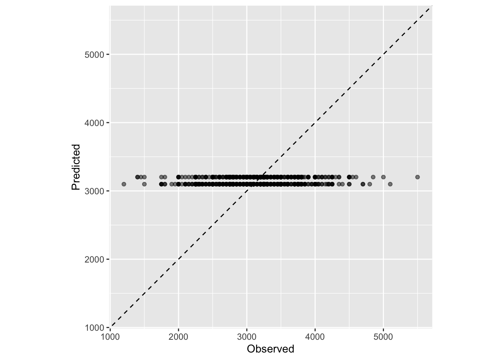
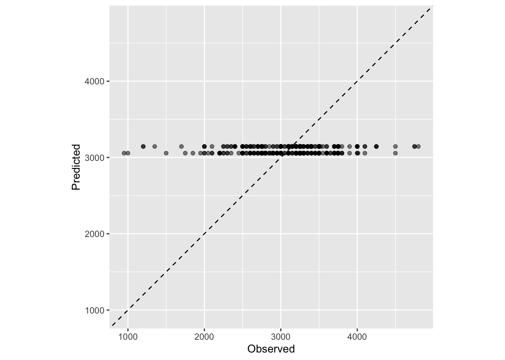
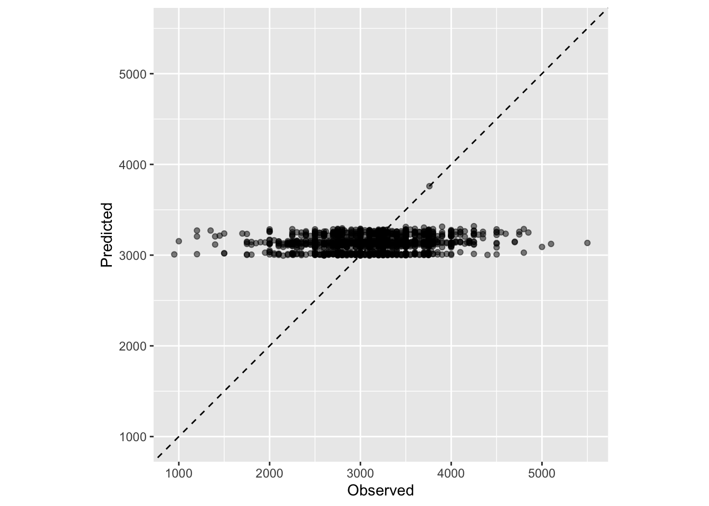
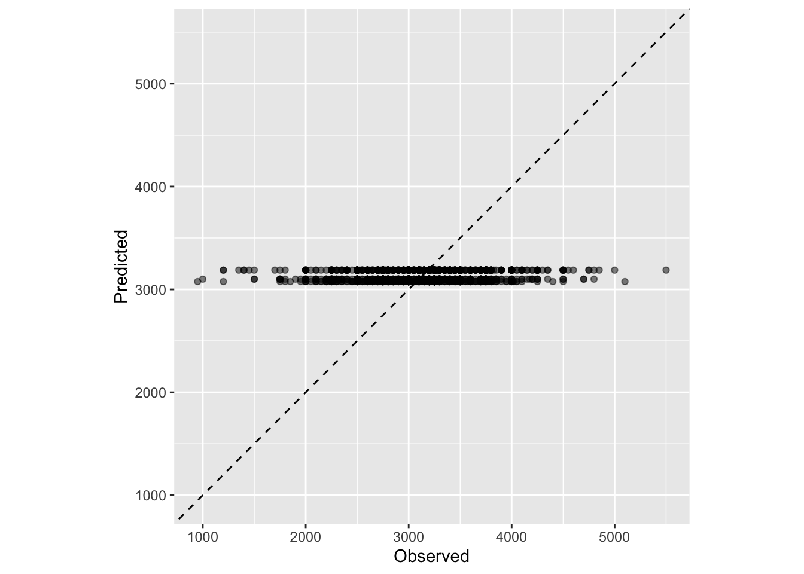
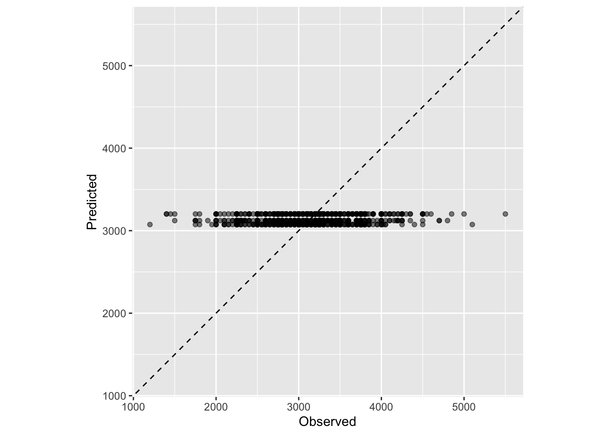
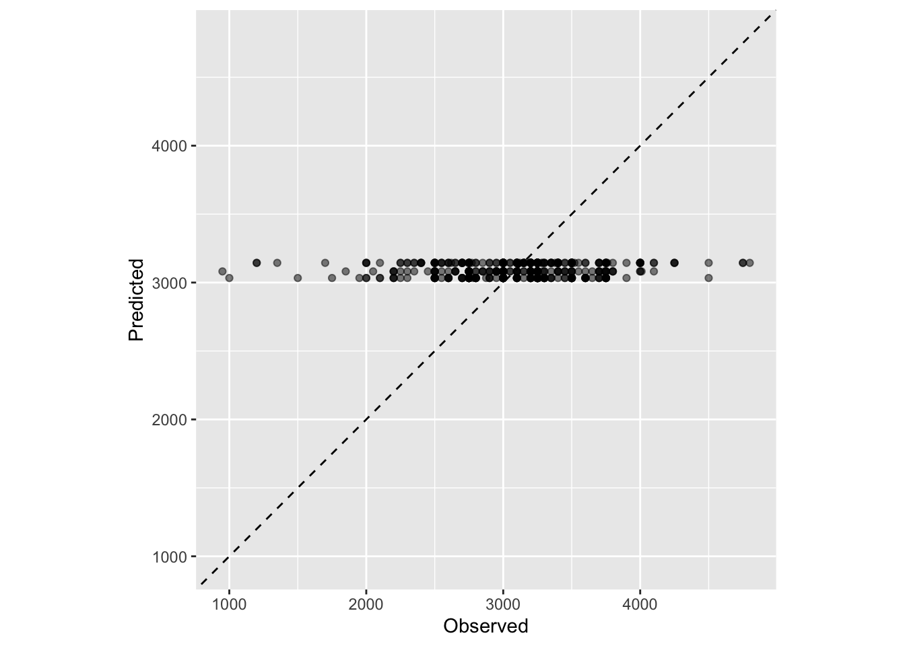
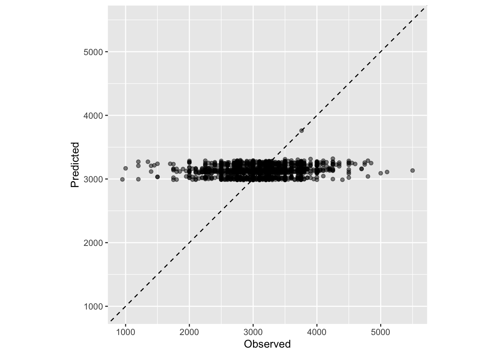
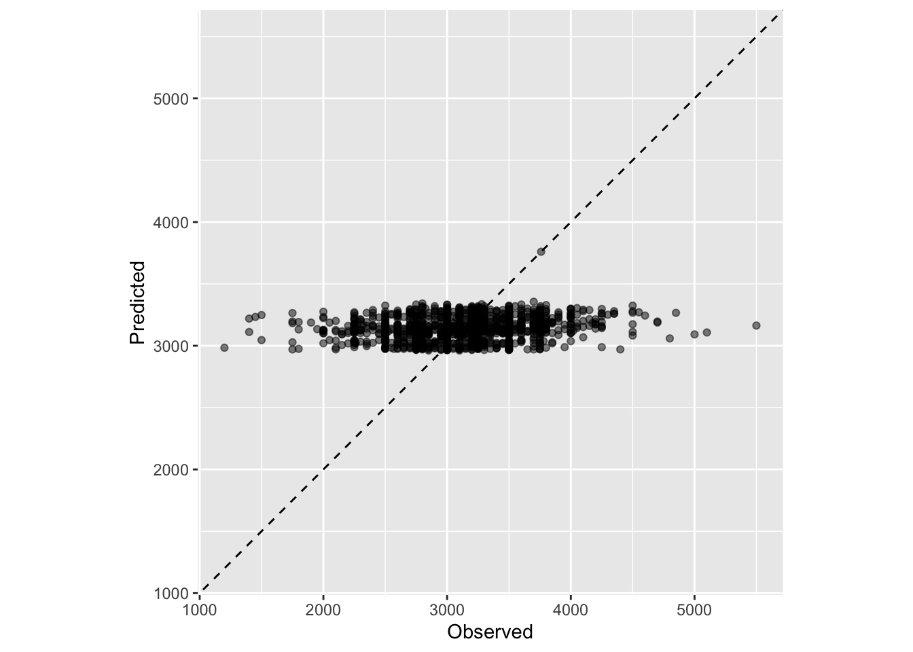
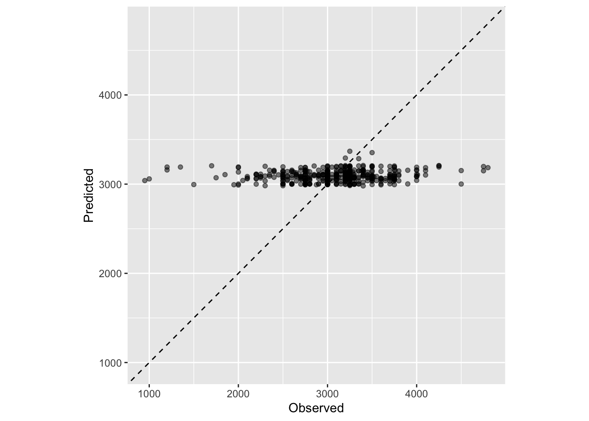

#load needed packages. make sure they are installed.
#install.packages("glue")
library(tidyverse) #for data processing/cleaning; includes ggplot2, tidyr, readr, dplyr, stringr, purr, forcats
library(skimr) #for nice visualization of data
library(here) #to set paths
library(renv) #for package management
library(knitr) #for nice tables
library(kableExtra) #for nice tables
library(gt) #for nice tables
library(gtsummary) #for summary tables
library(ggplot2) #for plotting
library(tidymodels) #for modeling
library(glue)
rm(list=ls()) #clear the environmentFull Analysis Script
Setup
Load the data
# Path to summary data. Note the use of the here() package and not absolute paths
data_location <- here::here("data","processed-data","ML_linear.rds")
# Load data
ML_linear <- readRDS(data_location)
str(ML_linear)tibble [1,920 × 17] (S3: tbl_df/tbl/data.frame)
$ Date : chr [1:1920] "1922/06" "1922/06" "1922/06" "1922/06" ...
$ Color : Factor w/ 3 levels "Black","Mixed Race",..: 1 1 1 1 3 1 3 3 2 3 ...
$ Status : Factor w/ 8 levels "Multigesta","Multipara",..: 1 1 2 2 2 2 2 2 2 2 ...
$ Age : num [1:1920] 27 27 25 24 28 23 39 29 30 27 ...
$ Nationality : Factor w/ 15 levels "German","Argentine",..: 4 4 4 4 4 4 4 4 4 10 ...
$ Birth : Factor w/ 4 levels "Abortion","Interventionist",..: 3 3 3 3 3 3 3 3 3 3 ...
$ MaternalOutcome : Factor w/ 3 levels "Discharged","Death",..: 1 1 1 1 1 1 1 1 1 1 ...
$ FetalOutcome : Factor w/ 2 levels "Live Birth","Stillbirth": 1 1 1 1 1 1 1 1 1 1 ...
$ Sex : Factor w/ 2 levels "F","M": 2 2 2 2 2 2 2 2 2 1 ...
$ Weightgrams : num [1:1920] 2900 3400 2200 2250 2600 2750 2750 2770 2800 3000 ...
$ Lengthcentimeters : num [1:1920] 42 52 49 45 47 45 45 49 48 49 ...
$ Gestation : Factor w/ 2 levels "singleton","twin": 1 1 1 1 1 1 1 1 1 1 ...
$ BirthweightCategory: Factor w/ 2 levels "LBW","NBW": 2 2 1 1 2 2 2 2 2 2 ...
$ ModifiedColor : Factor w/ 2 levels "Euro-Descent",..: 2 2 2 2 1 2 1 1 2 1 ...
$ ModifiedStatus : Factor w/ 2 levels "Multiparous",..: 1 1 1 1 1 1 1 1 1 1 ...
$ ModifiedNationality: Factor w/ 4 levels "Brazilian","European",..: 1 1 1 1 1 1 1 1 1 2 ...
$ Brazilian : Factor w/ 2 levels "Non-Brazilian",..: 2 2 2 2 2 2 2 2 2 1 ...Preparation for Model Assessment
First, I will create train and test data (75/25) to be able to evaluate the performance of our models. I will also set the seed to ensure reproducibility. For each model, I perform the following steps: 1) run the model on the train data; 2) perform cross-validation on the train data; 3) evaluate the model on the test data. The model outputs included in the final manuscript are on all the data.
# Fix the random numbers by setting the seed
# This enables the analysis to be reproducible when random numbers are used
rngseed = 1234
set.seed(rngseed)
# Create training data
# Put 3/4 of the data into the training set
data_split <- initial_split(ML_linear, prop = 3/4)
# Create data frames for the two sets:
train_data <- training(data_split)
test_data <- testing(data_split)Model 1
The first simple linear regression model is as follows:
\[\text{BW} = \alpha + \beta_1 \text{MA} + \epsilon\]
whereas BW is birth weight in grams, \(\alpha\) is the average birth weight, \(\beta_1\) is the group deviation from the average birth weight, MA is maternal ancestry (Euro-descent, Afro-descent), and \(\epsilon\) is the error term.
Full results are displayed in Table 2.
# Model 1: Final model for paper using all data
# Create a list to store R-squared values
r2_1 <- list()
rmse_1 <- list()
# Model using recipes and workflows
# Define recipe for model
ML_recipe1 <- recipe(Weightgrams ~ ModifiedColor, data = ML_linear) %>%
step_relevel(ModifiedColor, ref_level = "Euro-Descent") #%>% # Set reference level for ModifiedColor
#step_dummy(ModifiedColor) # Convert ModifiedColor to dummy variable. Cannot do this if I am merging tables
# Specify model
ML_spec1 <- linear_reg() %>%
set_engine("lm")
# Create work flow
ML_wf1 <- workflow() %>%
add_recipe(ML_recipe1) %>%
add_model(ML_spec1)
# Fit the work flow
ML_fit1 <- fit(ML_wf1, data = ML_linear)
# Summarize model fit with tidiers
ML_summary1 <- summary(ML_fit1) # Summary of fit
tidy(ML_fit1, conf.int = TRUE) # Coefficients and confidence intervals# A tibble: 2 × 7
term estimate std.error statistic p.value conf.low conf.high
<chr> <dbl> <dbl> <dbl> <dbl> <dbl> <dbl>
1 (Intercept) 3188. 17.7 180. 0 3153. 3222.
2 ModifiedColorAfro-Des… -99.3 23.0 -4.31 1.71e-5 -145. -54.1glance(ML_fit1) # Model-level statistics# A tibble: 1 × 12
r.squared adj.r.squared sigma statistic p.value df logLik AIC BIC
<dbl> <dbl> <dbl> <dbl> <dbl> <dbl> <dbl> <dbl> <dbl>
1 0.00959 0.00908 497. 18.6 0.0000171 1 -14643. 29291. 29308.
# ℹ 3 more variables: deviance <dbl>, df.residual <int>, nobs <int># Produce predictions for R-squared
ML_fit1_pred <- predict(ML_fit1, new_data = ML_linear %>% select(-Weightgrams))
ML_fit1_pred# A tibble: 1,920 × 1
.pred
<dbl>
1 3088.
2 3088.
3 3088.
4 3088.
5 3188.
6 3088.
7 3188.
8 3188.
9 3088.
10 3188.
# ℹ 1,910 more rows# Predicted numeric outcome named .pred. Now we will match predicted values with corresponding observed outcome values
ML_fit1_pred <- bind_cols(ML_fit1_pred, ML_linear %>% select(Weightgrams))
ML_fit1_pred# A tibble: 1,920 × 2
.pred Weightgrams
<dbl> <dbl>
1 3088. 2900
2 3088. 3400
3 3088. 2200
4 3088. 2250
5 3188. 2600
6 3088. 2750
7 3188. 2750
8 3188. 2770
9 3088. 2800
10 3188. 3000
# ℹ 1,910 more rows# Plot observed versus predicted
plot1 <- ggplot(ML_fit1_pred, aes(x = Weightgrams, y = .pred)) +
geom_abline(lty = 2) + # Add a dashed line to represent the 1:1 line
geom_point(alpha = 0.5) +
labs(x = "Observed", y = "Predicted") + #Scale and size x- and y-axis uniformly
coord_obs_pred()
plot1# Create metric set including RMSE and R-squared
metrics_fit1 <- metric_set(rmse, rsq)
metrics_fit1(ML_fit1_pred, truth = Weightgrams, estimate = .pred)# A tibble: 2 × 3
.metric .estimator .estimate
<chr> <chr> <dbl>
1 rmse standard 496.
2 rsq standard 0.00959# Convert the output to a data frame and mutate the .estimate column to numeric
metrics_fit1 <- as.data.frame(metrics_fit1(ML_fit1_pred, truth = Weightgrams, estimate = .pred)) %>%
mutate(.estimate = as.numeric(.estimate))
options(scipen = 999) # set opens to avoid scientific notation
metrics_fit1 .metric .estimator .estimate
1 rmse standard 496.452761200
2 rsq standard 0.009593893# Create a gtsummary table directly from the model
table_model1 <-
tbl_regression(ML_fit1, exponentiate = FALSE, intercept = TRUE) %>%
modify_column_unhide(columns = c(statistic, std.error)) %>%
add_significance_stars(hide_ci = TRUE, hide_p = TRUE) %>%
add_glance_table(include = c(r.squared, nobs)) %>%
modify_header(statistic = "**T-Statistic**") # rename header from statistic to t-statistic
table_model1| Characteristic | Beta1 | SE2 | T-Statistic |
|---|---|---|---|
| (Intercept) | 3,188*** | 17.7 | 180 |
| ModifiedColor | |||
| Euro-Descent | — | — | — |
| Afro-Descent | -99*** | 23.0 | -4.31 |
| R² | 0.010 | ||
| No. Obs. | 1,920 | ||
| 1 *p<0.05; **p<0.01; ***p<0.001 | |||
| 2 SE = Standard Error | |||
# Print table
table_model1| Characteristic | Beta1 | SE2 | T-Statistic |
|---|---|---|---|
| (Intercept) | 3,188*** | 17.7 | 180 |
| ModifiedColor | |||
| Euro-Descent | — | — | — |
| Afro-Descent | -99*** | 23.0 | -4.31 |
| R² | 0.010 | ||
| No. Obs. | 1,920 | ||
| 1 *p<0.05; **p<0.01; ***p<0.001 | |||
| 2 SE = Standard Error | |||
# Extract RMSE and R2 for in-line text
r2_1$model1 <- metrics_fit1[metrics_fit1$.metric == "rsq", ".estimate"]
rmse_1$model1 <- metrics_fit1[metrics_fit1$.metric == "rmse", ".estimate"]
# Save regression output into table
saveRDS(table_model1, file = here::here("results", "tables", "table_model1_final.rds"))
# Create a gtsummary table directly from the model with CIs
table_model1_CI <-
tbl_regression(ML_fit1, exponentiate = FALSE, intercept = TRUE) %>%
modify_column_unhide(columns = c(statistic, std.error)) %>%
add_significance_stars(hide_ci = FALSE, hide_p = FALSE) %>%
add_glance_table(include = c(r.squared, nobs)) %>%
modify_header(statistic = "**T-Statistic**") # rename header from statistic to t-statistic
table_model1_CI| Characteristic | Beta1 | SE2 | T-Statistic | 95% CI2 | p-value |
|---|---|---|---|---|---|
| (Intercept) | 3,188*** | 17.7 | 180 | 3,153, 3,222 | <0.001 |
| ModifiedColor | |||||
| Euro-Descent | — | — | — | — | |
| Afro-Descent | -99*** | 23.0 | -4.31 | -145, -54 | <0.001 |
| R² | 0.010 | ||||
| No. Obs. | 1,920 | ||||
| 1 *p<0.05; **p<0.01; ***p<0.001 | |||||
| 2 SE = Standard Error, CI = Confidence Interval | |||||
The adjusted R-squared is 0.01, and the RMSE is 496.
Model 1 Performance
First, I will evaluate the model on our training data.
# Training model 1
# Create a list to store R-squared and RMSE values
r2_1_train <- list()
rmse_1_train <- list()
# Model using recipes and workflows
# Define recipe for model
ML_recipe1_train <- recipe(Weightgrams ~ ModifiedColor, data = train_data) %>%
step_relevel(ModifiedColor, ref_level = "Euro-Descent") %>% # Set reference level for ModifiedColor
step_dummy(ModifiedColor) # Convert ModifiedColor to dummy variable
# Specify model
ML_spec1_train <- linear_reg() %>%
set_engine("lm")
# Create work flow
ML_wf1_train <- workflow() %>%
add_recipe(ML_recipe1_train) %>%
add_model(ML_spec1_train)
# Fit the work flow
ML_fit1_train <- fit(ML_wf1_train, data = train_data)
# Summarize model fit with tidiers
ML_summary1_train <- summary(ML_fit1_train) # Summary of fit
tidy(ML_fit1_train, conf.int = TRUE) # Coefficients and confidence intervals# A tibble: 2 × 7
term estimate std.error statistic p.value conf.low conf.high
<chr> <dbl> <dbl> <dbl> <dbl> <dbl> <dbl>
1 (Intercept) 3202. 20.2 158. 0 3163. 3242.
2 ModifiedColor_Afro.De… -104. 26.3 -3.94 8.65e-5 -155. -52.0glance(ML_fit1_train) # Model-level statistics# A tibble: 1 × 12
r.squared adj.r.squared sigma statistic p.value df logLik AIC BIC
<dbl> <dbl> <dbl> <dbl> <dbl> <dbl> <dbl> <dbl> <dbl>
1 0.0107 0.00998 491. 15.5 0.0000865 1 -10965. 21936. 21952.
# ℹ 3 more variables: deviance <dbl>, df.residual <int>, nobs <int># Produce predictions for R-squared
ML_fit1_pred_train <- predict(ML_fit1_train, new_data = train_data %>% select(-Weightgrams))
ML_fit1_pred_train# A tibble: 1,440 × 1
.pred
<dbl>
1 3202.
2 3099.
3 3202.
4 3202.
5 3202.
6 3099.
7 3099.
8 3099.
9 3099.
10 3099.
# ℹ 1,430 more rows# Predicted numeric outcome named .pred. Now we will match predicted values with corresponding observed outcome values
ML_fit1_pred_train <- bind_cols(ML_fit1_pred_train, train_data %>% select(Weightgrams))
ML_fit1_pred_train# A tibble: 1,440 × 2
.pred Weightgrams
<dbl> <dbl>
1 3202. 3200
2 3099. 3100
3 3202. 2760
4 3202. 3500
5 3202. 2500
6 3099. 3000
7 3099. 3600
8 3099. 2600
9 3099. 3700
10 3099. 3850
# ℹ 1,430 more rows# Plot observed versus predicted
plot1_train <- ggplot(ML_fit1_pred_train, aes(x = Weightgrams, y = .pred)) +
geom_abline(lty = 2) + # Add a dashed line to represent the 1:1 line
geom_point(alpha = 0.5) +
labs(x = "Observed", y = "Predicted") + #Scale and size x- and y-axis uniformly
coord_obs_pred()
plot1_train
# Create metric set including RMSE and R-squared
metrics_fit1_train <- metric_set(rmse, rsq)
metrics_fit1_train(ML_fit1_pred_train, truth = Weightgrams, estimate = .pred)# A tibble: 2 × 3
.metric .estimator .estimate
<chr> <chr> <dbl>
1 rmse standard 491.
2 rsq standard 0.0107# Convert the output to a data frame and mutate the .estimate column to numeric
metrics_fit1_train <- as.data.frame(metrics_fit1_train(ML_fit1_pred_train, truth = Weightgrams, estimate = .pred)) %>%
mutate(.estimate = as.numeric(.estimate))
options(scipen = 999) # set opens to avoid scientific notation
metrics_fit1_train .metric .estimator .estimate
1 rmse standard 490.64912549
2 rsq standard 0.01066381# Create a gtsummary table directly from the model
table_model1_train <-
tbl_regression(ML_fit1_train, exponentiate = FALSE, intercept = TRUE, show_single_row = everything()) %>%
bold_p() %>%
add_glance_table(include = c(r.squared, nobs)) %>%
modify_column_unhide(columns = c(statistic, std.error)) %>%
add_significance_stars(hide_ci = FALSE, hide_p = FALSE)
table_model1_train| Characteristic | Beta1 | SE2 | Statistic | 95% CI2 | p-value |
|---|---|---|---|---|---|
| (Intercept) | 3,202*** | 20.2 | 158 | 3,163, 3,242 | <0.001 |
| ModifiedColor_Afro.Descent | -104*** | 26.3 | -3.94 | -155, -52 | <0.001 |
| R² | 0.011 | ||||
| No. Obs. | 1,440 | ||||
| 1 *p<0.05; **p<0.01; ***p<0.001 | |||||
| 2 SE = Standard Error, CI = Confidence Interval | |||||
# Extract R-squared and RMSE values for in-line text (because data frame with columns not list)
r2_1_train$model1_train <- metrics_fit1_train[metrics_fit1_train$.metric == "rsq", ".estimate"]
rmse_1_train$model1_train <- metrics_fit1_train[metrics_fit1_train$.metric == "rmse", ".estimate"]
# Save regression output into table
saveRDS(table_model1_train, file = here::here("results", "tables", "table_model1_train.rds"))The results are similar to those from the model run on all the data. The adjusted R-squared is 0.011, the same as the full model. The RMSE is 491, which is slightly lower than the full model, 496, which shows better performance.
Now, I will perform cross-validation on the training data.
# CV model 1
# Set the seed for reproducibility
set.seed(rngseed)
# Create 10-fold cross-validation
folds <- vfold_cv(train_data, v = 10)
folds# 10-fold cross-validation
# A tibble: 10 × 2
splits id
<list> <chr>
1 <split [1296/144]> Fold01
2 <split [1296/144]> Fold02
3 <split [1296/144]> Fold03
4 <split [1296/144]> Fold04
5 <split [1296/144]> Fold05
6 <split [1296/144]> Fold06
7 <split [1296/144]> Fold07
8 <split [1296/144]> Fold08
9 <split [1296/144]> Fold09
10 <split [1296/144]> Fold10# Create a list to store R-squared and RMSE values
r2_1_cv <- list()
rmse_1_cv <- list()
# Define recipe for model
ML_recipe1_cv <- recipe(Weightgrams ~ ModifiedColor, data = train_data) %>%
step_relevel(ModifiedColor, ref_level = "Euro-Descent") %>% # Set reference level for ModifiedColor
step_dummy(ModifiedColor) # Convert ModifiedColor to dummy variable
# Set model specification
ML_spec1_cv <- linear_reg() %>% set_engine("lm")
# Create and initialize workflow that bundles together model specification and formula.
ML_wf1_cv <- workflow() %>%
add_model(ML_spec1_cv) %>%
add_recipe(ML_recipe1_cv)
fit_resamples(ML_wf1_cv, resamples = folds)# Resampling results
# 10-fold cross-validation
# A tibble: 10 × 4
splits id .metrics .notes
<list> <chr> <list> <list>
1 <split [1296/144]> Fold01 <tibble [2 × 4]> <tibble [0 × 3]>
2 <split [1296/144]> Fold02 <tibble [2 × 4]> <tibble [0 × 3]>
3 <split [1296/144]> Fold03 <tibble [2 × 4]> <tibble [0 × 3]>
4 <split [1296/144]> Fold04 <tibble [2 × 4]> <tibble [0 × 3]>
5 <split [1296/144]> Fold05 <tibble [2 × 4]> <tibble [0 × 3]>
6 <split [1296/144]> Fold06 <tibble [2 × 4]> <tibble [0 × 3]>
7 <split [1296/144]> Fold07 <tibble [2 × 4]> <tibble [0 × 3]>
8 <split [1296/144]> Fold08 <tibble [2 × 4]> <tibble [0 × 3]>
9 <split [1296/144]> Fold09 <tibble [2 × 4]> <tibble [0 × 3]>
10 <split [1296/144]> Fold10 <tibble [2 × 4]> <tibble [0 × 3]># Resample the model
ML_wf1_cv_rs <- fit_resamples(ML_wf1_cv, resamples = folds)
ML_wf1_cv_rs# Resampling results
# 10-fold cross-validation
# A tibble: 10 × 4
splits id .metrics .notes
<list> <chr> <list> <list>
1 <split [1296/144]> Fold01 <tibble [2 × 4]> <tibble [0 × 3]>
2 <split [1296/144]> Fold02 <tibble [2 × 4]> <tibble [0 × 3]>
3 <split [1296/144]> Fold03 <tibble [2 × 4]> <tibble [0 × 3]>
4 <split [1296/144]> Fold04 <tibble [2 × 4]> <tibble [0 × 3]>
5 <split [1296/144]> Fold05 <tibble [2 × 4]> <tibble [0 × 3]>
6 <split [1296/144]> Fold06 <tibble [2 × 4]> <tibble [0 × 3]>
7 <split [1296/144]> Fold07 <tibble [2 × 4]> <tibble [0 × 3]>
8 <split [1296/144]> Fold08 <tibble [2 × 4]> <tibble [0 × 3]>
9 <split [1296/144]> Fold09 <tibble [2 × 4]> <tibble [0 × 3]>
10 <split [1296/144]> Fold10 <tibble [2 × 4]> <tibble [0 × 3]># Get model metrics
ML_cv1_metrics <- collect_metrics(ML_wf1_cv_rs)
# Filter the data frame to include only rows with "rmse" and "rsq" in the ".metric" column
ML_cv1_metrics <- ML_cv1_metrics[ML_cv1_metrics$.metric %in% c("rmse", "rsq"), !(names(ML_cv1_metrics) %in% ".config")]
ML_cv1_metrics# A tibble: 2 × 5
.metric .estimator mean n std_err
<chr> <chr> <dbl> <int> <dbl>
1 rmse standard 490. 10 14.5
2 rsq standard 0.0169 10 0.00554# Extract R-squared and RMSE values for in-line text
# For R-squared
r2_1_cv$model1_cv <- ML_cv1_metrics %>%
filter(.metric == "rsq") %>%
pull(mean)
# For RMSE
rmse_1_cv$model1_cv <- ML_cv1_metrics %>%
filter(.metric == "rmse") %>%
pull(mean)
# Save regression output into table
saveRDS(ML_cv1_metrics, file = here::here("results", "tables", "ML_cv1_metrics.rds"))Performing cross-validation results in an RMSE that is the same as the training model 490, lower than the full model. The r-squared 0.017 is also higher than the training 0.011 and full models 0.01, demonstrating better model performance.
Finally, I’ll run the model on the test data.
# Testing model 1
# Create a list to store R-squared and RMSE values
r2_1_test <- list()
rmse_1_test <- list()
# Model using recipes and workflows
# Define recipe for model
ML_recipe1_test <- recipe(Weightgrams ~ ModifiedColor, data = test_data) %>%
step_relevel(ModifiedColor, ref_level = "Euro-Descent") %>% # Set reference level for ModifiedColor
step_dummy(ModifiedColor) # Convert ModifiedColor to dummy variable
# Specify model
ML_spec1_test <- linear_reg() %>%
set_engine("lm")
# Create work flow
ML_wf1_test <- workflow() %>%
add_recipe(ML_recipe1_test) %>%
add_model(ML_spec1_test)
# Fit the work flow
ML_fit1_test <- fit(ML_wf1_test, data = test_data)
# Summarize model fit with tidiers
ML_summary1_test <- summary(ML_fit1_test) # Summary of fit
tidy(ML_fit1_test, conf.int = TRUE) # Coefficients and confidence intervals# A tibble: 2 × 7
term estimate std.error statistic p.value conf.low conf.high
<chr> <dbl> <dbl> <dbl> <dbl> <dbl> <dbl>
1 (Intercept) 3144. 36.3 86.5 4.42e-294 3072. 3215.
2 ModifiedColor_Afro.… -87.5 47.5 -1.84 6.61e- 2 -181. 5.85glance(ML_fit1_test) # Model-level statistics# A tibble: 1 × 12
r.squared adj.r.squared sigma statistic p.value df logLik AIC BIC
<dbl> <dbl> <dbl> <dbl> <dbl> <dbl> <dbl> <dbl> <dbl>
1 0.00705 0.00497 513. 3.39 0.0661 1 -3675. 7356. 7369.
# ℹ 3 more variables: deviance <dbl>, df.residual <int>, nobs <int># Produce predictions for R-squared
ML_fit1_pred_test <- predict(ML_fit1_test, new_data = test_data %>% select(-Weightgrams))
ML_fit1_pred_test# A tibble: 480 × 1
.pred
<dbl>
1 3056.
2 3056.
3 3056.
4 3144.
5 3144.
6 3056.
7 3144.
8 3056.
9 3144.
10 3144.
# ℹ 470 more rows# Predicted numeric outcome named .pred. Now we will match predicted values with corresponding observed outcome values
ML_fit1_pred_test <- bind_cols(ML_fit1_pred_test, test_data %>% select(Weightgrams))
ML_fit1_pred_test# A tibble: 480 × 2
.pred Weightgrams
<dbl> <dbl>
1 3056. 2900
2 3056. 3400
3 3056. 2200
4 3144. 2750
5 3144. 2770
6 3056. 2800
7 3144. 3000
8 3056. 3200
9 3144. 3250
10 3144. 3250
# ℹ 470 more rows# Plot observed versus predicted
plot1_test <- ggplot(ML_fit1_pred_test, aes(x = Weightgrams, y = .pred)) +
geom_abline(lty = 2) + # Add a dashed line to represent the 1:1 line
geom_point(alpha = 0.5) +
labs(x = "Observed", y = "Predicted") + #Scale and size x- and y-axis uniformly
coord_obs_pred()
plot1_test
# Create metric set including RMSE and R-squared
metrics_fit1_test <- metric_set(rmse, rsq)
metrics_fit1_test(ML_fit1_pred_test, truth = Weightgrams, estimate = .pred)# A tibble: 2 × 3
.metric .estimator .estimate
<chr> <chr> <dbl>
1 rmse standard 512.
2 rsq standard 0.00705# Convert the output to a data frame and mutate the .estimate column to numeric
metrics_fit1_test <- as.data.frame(metrics_fit1_test(ML_fit1_pred_test, truth = Weightgrams, estimate = .pred)) %>%
mutate(.estimate = as.numeric(.estimate))
options(scipen = 999) # set opens to avoid scientific notation
metrics_fit1_test .metric .estimator .estimate
1 rmse standard 511.673262685
2 rsq standard 0.007046893# Create a gtsummary table directly from the model
table_model1_test <-
tbl_regression(ML_fit1_test, exponentiate = FALSE, intercept = TRUE, show_single_row = everything()) %>%
bold_p() %>%
add_glance_table(include = c(r.squared, nobs)) %>%
modify_column_unhide(columns = c(statistic, std.error)) %>%
add_significance_stars(hide_ci = FALSE, hide_p = FALSE)
table_model1_test| Characteristic | Beta1 | SE2 | Statistic | 95% CI2 | p-value |
|---|---|---|---|---|---|
| (Intercept) | 3,144*** | 36.3 | 86.5 | 3,072, 3,215 | <0.001 |
| ModifiedColor_Afro.Descent | -87 | 47.5 | -1.84 | -181, 5.8 | 0.066 |
| R² | 0.007 | ||||
| No. Obs. | 480 | ||||
| 1 *p<0.05; **p<0.01; ***p<0.001 | |||||
| 2 SE = Standard Error, CI = Confidence Interval | |||||
# Extract R-squared and RMSE values for in-line text (because data frame with columns not list)
r2_1_test$model1_test<- metrics_fit1_test[metrics_fit1_test$.metric == "rsq", ".estimate"]
rmse_1_test$model1_test <- metrics_fit1_test[metrics_fit1_test$.metric == "rmse", ".estimate"]
# Save regression output into table
saveRDS(table_model1_test, file = here::here("results", "tables", "table_model1_test.rds"))When running the model on our testing dataset, our results remain significant at the 0.05 level. The RMSE is 512 and the r-squared is 0.007. This shows a slightly worse fit than our training results.
Model 2
The second multiple linear regression model is as follows:
\[\text{BW} = \alpha + \beta_1 \text{MA} + \beta_2 \text{Gest} + \beta_3 \text{Nat} + \beta_4 \text{Age} + \epsilon\]
whereas BW is birth weight in grams, \(\alpha\) is the average birth weight, \(\beta_x\) are the group deviations from the average birth weight, MA is maternal ancestry (Euro-descent, Afro-descent), Gest is gestational status (nulliparous or multiparous), Age is maternal age in years, and \(\epsilon\) is the error term. Results are displayed in Table 3.
# Model 2: Final model for paper using all data
# Create a list to store R-squared values
r2_2 <- list()
rmse_2 <- list()
# Using recipes and workflows
# Define recipe for model
ML_recipe2 <- recipe(Weightgrams ~ ModifiedColor + Age + ModifiedStatus + ModifiedNationality, data = ML_linear) %>%
step_relevel(ModifiedColor, ref_level = "Euro-Descent") #%>% # Set reference level for ModifiedColor
#step_dummy(ModifiedColor) #%>% # Convert all nominal variables to dummy variables. Cannot do this if I am merging tables in gtsummary
#step_normalize(all_numeric_predictors()) # Normalize all numeric predictors. Cannot do this if I am merging tables in gtsummary
# Define model specification
ML_spec2 <- linear_reg() %>%
set_engine("lm") %>%
set_mode("regression")
# Create workflow
ML_wf2 <- workflow() %>%
add_recipe(ML_recipe2) %>%
add_model(ML_spec2)
# Fit the workflow
ML_fit2 <- fit(ML_wf2, data = ML_linear)
# Summarize model fit with tidiers
ML_lm2_summary <- summary(ML_fit2) # Summary of fit
tidy(ML_fit2, conf.int = TRUE) %>% mutate(p.value = round(p.value, 5)) # Coefficients and confidence intervals with p-values rounded to 5 decimal places# A tibble: 7 × 7
term estimate std.error statistic p.value conf.low conf.high
<chr> <dbl> <dbl> <dbl> <dbl> <dbl> <dbl>
1 (Intercept) 3152. 65.5 48.1 0 3023. 3280.
2 ModifiedColorAfro-Des… -85.3 26.9 -3.17 0.00157 -138. -32.5
3 Age 2.73 2.23 1.22 0.221 -1.64 7.10
4 ModifiedStatusNullipa… -113. 25.3 -4.47 0.00001 -163. -63.4
5 ModifiedNationalityEu… 26.6 36.6 0.727 0.467 -45.1 98.3
6 ModifiedNationalityLa… 74.9 166. 0.451 0.652 -251. 400.
7 ModifiedNationalityMi… 526. 494. 1.07 0.286 -442. 1495. glance(ML_fit2) # Model-level statistics# A tibble: 1 × 12
r.squared adj.r.squared sigma statistic p.value df logLik AIC BIC
<dbl> <dbl> <dbl> <dbl> <dbl> <dbl> <dbl> <dbl> <dbl>
1 0.0271 0.0240 493. 8.87 1.45e-9 6 -14626. 29267. 29312.
# ℹ 3 more variables: deviance <dbl>, df.residual <int>, nobs <int># Produce predictions for R-squared
ML_fit2_pred <- predict(ML_fit2, new_data = ML_linear %>% select(-Weightgrams))
ML_fit2_pred# A tibble: 1,920 × 1
.pred
<dbl>
1 3140.
2 3140.
3 3135.
4 3132.
5 3228.
6 3129.
7 3258.
8 3231.
9 3148.
10 3252.
# ℹ 1,910 more rows# Predicted numeric outcome named .pred. Now we will match predicted values with corresponding observed outcome values
ML_fit2_pred <- bind_cols(ML_fit2_pred, ML_linear %>% select(Weightgrams))
ML_fit2_pred# A tibble: 1,920 × 2
.pred Weightgrams
<dbl> <dbl>
1 3140. 2900
2 3140. 3400
3 3135. 2200
4 3132. 2250
5 3228. 2600
6 3129. 2750
7 3258. 2750
8 3231. 2770
9 3148. 2800
10 3252. 3000
# ℹ 1,910 more rows# Plot observed versus predicted
plot2 <- ggplot(ML_fit2_pred, aes(x = Weightgrams, y = .pred)) +
geom_abline(lty = 2) + # Add a dashed line to represent the 1:1 line
geom_point(alpha = 0.5) +
labs(x = "Observed", y = "Predicted") + #Scale and size x- and y-axis uniformly
coord_obs_pred()
plot2
# Create metric set including RMSE and R-squared
metrics_fit2 <- metric_set(rmse, rsq)
metrics_fit2(ML_fit2_pred, truth = Weightgrams, estimate = .pred)# A tibble: 2 × 3
.metric .estimator .estimate
<chr> <chr> <dbl>
1 rmse standard 492.
2 rsq standard 0.0271# Convert the output to a data frame and mutate the .estimate column to numeric
metrics_fit2 <- as.data.frame(metrics_fit2(ML_fit2_pred, truth = Weightgrams, estimate = .pred)) %>%
mutate(.estimate = as.numeric(.estimate))
options(scipen = 999) # set opens to avoid scientific notation
metrics_fit2 .metric .estimator .estimate
1 rmse standard 492.05433419
2 rsq standard 0.02706557# Create a gtsummary table directly from the model
table_model2 <- tbl_regression(ML_fit2, exponentiate = FALSE, intercept = TRUE) %>%
modify_column_unhide(columns = c(statistic, std.error)) %>%
add_significance_stars(hide_ci = TRUE, hide_p = TRUE) %>%
add_glance_table(include = c(r.squared, nobs)) %>%
modify_header(statistic = "**T-Statistic**") # rename header from statistic to t-statistic
table_model2| Characteristic | Beta1 | SE2 | T-Statistic |
|---|---|---|---|
| (Intercept) | 3,152*** | 65.5 | 48.1 |
| ModifiedColor | |||
| Euro-Descent | — | — | — |
| Afro-Descent | -85** | 26.9 | -3.17 |
| Age | 2.7 | 2.23 | 1.22 |
| ModifiedStatus | |||
| Multiparous | — | — | — |
| Nulliparous | -113*** | 25.3 | -4.47 |
| ModifiedNationality | |||
| Brazilian | — | — | — |
| European | 27 | 36.6 | 0.727 |
| Latin American | 75 | 166 | 0.451 |
| Middle Eastern | 526 | 494 | 1.07 |
| R² | 0.027 | ||
| No. Obs. | 1,920 | ||
| 1 *p<0.05; **p<0.01; ***p<0.001 | |||
| 2 SE = Standard Error | |||
# Extract RMSE and R2 for in-line text
r2_2$model2 <- metrics_fit2[metrics_fit2$.metric == "rsq", ".estimate"]
rmse_2$model2 <- metrics_fit2[metrics_fit2$.metric == "rmse", ".estimate"]
# Save regression output into table
saveRDS(table_model2, file = here::here("results", "tables", "table_model2_final.rds"))
# Create a gtsummary table directly from the model with CIs
table_model2_CI <- tbl_regression(ML_fit2, exponentiate = FALSE, intercept = TRUE) %>%
modify_column_unhide(columns = c(statistic, std.error)) %>%
add_significance_stars(hide_ci = FALSE, hide_p = FALSE) %>%
add_glance_table(include = c(r.squared, nobs)) %>%
modify_header(statistic = "**T-Statistic**") # rename header from statistic to t-statistic
table_model2_CI| Characteristic | Beta1 | SE2 | T-Statistic | 95% CI2 | p-value |
|---|---|---|---|---|---|
| (Intercept) | 3,152*** | 65.5 | 48.1 | 3,023, 3,280 | <0.001 |
| ModifiedColor | |||||
| Euro-Descent | — | — | — | — | |
| Afro-Descent | -85** | 26.9 | -3.17 | -138, -32 | 0.002 |
| Age | 2.7 | 2.23 | 1.22 | -1.6, 7.1 | 0.2 |
| ModifiedStatus | |||||
| Multiparous | — | — | — | — | |
| Nulliparous | -113*** | 25.3 | -4.47 | -163, -63 | <0.001 |
| ModifiedNationality | |||||
| Brazilian | — | — | — | — | |
| European | 27 | 36.6 | 0.727 | -45, 98 | 0.5 |
| Latin American | 75 | 166 | 0.451 | -251, 400 | 0.7 |
| Middle Eastern | 526 | 494 | 1.07 | -442, 1,495 | 0.3 |
| R² | 0.027 | ||||
| No. Obs. | 1,920 | ||||
| 1 *p<0.05; **p<0.01; ***p<0.001 | |||||
| 2 SE = Standard Error, CI = Confidence Interval | |||||
The RMSE is 492 and the r-squared is 0.027.
Model 2 Performance
Now, I’ll run the model on the training data.
# Training model 2
# Create a list to store R-squared and RMSE values
r2_2_train <- list()
rmse_2_train <- list()
# Using recipes and workflows
# Define recipe for model
ML_recipe2_train <- recipe(Weightgrams ~ ModifiedColor + Age + ModifiedStatus + ModifiedNationality, data = train_data) %>%
step_relevel(ModifiedColor, ref_level = "Euro-Descent") %>% # Set reference level for ModifiedColor
step_dummy(all_nominal(), -all_outcomes()) %>% # Convert all nominal variables to dummy variables
step_normalize(all_numeric_predictors()) # Normalize all numeric predictors
# Define model specification
ML_spec2_train <- linear_reg() %>%
set_engine("lm") %>%
set_mode("regression")
# Create workflow
ML_wf2_train <- workflow() %>%
add_recipe(ML_recipe2_train) %>%
add_model(ML_spec2_train)
# Fit the workflow
ML_fit2_train <- fit(ML_wf2_train, data = train_data)
# Summarize model fit with tidiers
ML_lm2_summary_train <- summary(ML_fit2_train) # Summary of fit
tidy(ML_fit2_train, conf.int = TRUE) %>% mutate(p.value = round(p.value, 5)) # Coefficients and confidence intervals with p-values rounded to 5 decimal places# A tibble: 7 × 7
term estimate std.error statistic p.value conf.low conf.high
<chr> <dbl> <dbl> <dbl> <dbl> <dbl> <dbl>
1 (Intercept) 3141. 12.8 245. 0 3116. 3166.
2 Age 25.2 14.3 1.76 0.0786 -2.89 53.3
3 ModifiedColor_Afro.De… -45.2 15.1 -2.99 0.00288 -74.8 -15.5
4 ModifiedStatus_Nullip… -60.5 14.2 -4.27 0.00002 -88.3 -32.7
5 ModifiedNationality_E… 7.20 15.2 0.475 0.635 -22.5 36.9
6 ModifiedNationality_L… -1.15 12.9 -0.0893 0.929 -26.4 24.1
7 ModifiedNationality_M… 13.1 12.8 1.02 0.309 -12.1 38.2glance(ML_fit2_train) # Model-level statistics# A tibble: 1 × 12
r.squared adj.r.squared sigma statistic p.value df logLik AIC BIC
<dbl> <dbl> <dbl> <dbl> <dbl> <dbl> <dbl> <dbl> <dbl>
1 0.0348 0.0307 486. 8.60 3.28e-9 6 -10947. 21911. 21953.
# ℹ 3 more variables: deviance <dbl>, df.residual <int>, nobs <int># Produce predictions for R-squared
ML_fit2_pred_train <- predict(ML_fit2_train, new_data = train_data %>% select(-Weightgrams))
ML_fit2_pred_train# A tibble: 1,440 × 1
.pred
<dbl>
1 3143.
2 3168.
3 3219.
4 3102.
5 3233.
6 3150.
7 3163.
8 3000.
9 3018.
10 3127.
# ℹ 1,430 more rows# Predicted numeric outcome named .pred. Now we will match predicted values with corresponding observed outcome values
ML_fit2_pred_train <- bind_cols(ML_fit2_pred_train, train_data %>% select(Weightgrams))
ML_fit2_pred_train# A tibble: 1,440 × 2
.pred Weightgrams
<dbl> <dbl>
1 3143. 3200
2 3168. 3100
3 3219. 2760
4 3102. 3500
5 3233. 2500
6 3150. 3000
7 3163. 3600
8 3000. 2600
9 3018. 3700
10 3127. 3850
# ℹ 1,430 more rows# Plot observed versus predicted
plot2_train <- ggplot(ML_fit2_pred_train, aes(x = Weightgrams, y = .pred)) +
geom_abline(lty = 2) + # Add a dashed line to represent the 1:1 line
geom_point(alpha = 0.5) +
labs(x = "Observed", y = "Predicted") + #Scale and size x- and y-axis uniformly
coord_obs_pred()
plot2_train
# Create metric set including RMSE and R-squared
metrics_fit2_train <- metric_set(rmse, rsq)
metrics_fit2_train(ML_fit2_pred_train, truth = Weightgrams, estimate = .pred)# A tibble: 2 × 3
.metric .estimator .estimate
<chr> <chr> <dbl>
1 rmse standard 485.
2 rsq standard 0.0348# Convert the output to a data frame and mutate the .estimate column to numeric
metrics_fit2_train <- as.data.frame(metrics_fit2_train(ML_fit2_pred_train, truth = Weightgrams, estimate = .pred)) %>%
mutate(.estimate = as.numeric(.estimate))
options(scipen = 999) # set opens to avoid scientific notation
metrics_fit2_train .metric .estimator .estimate
1 rmse standard 484.63474096
2 rsq standard 0.03476975# Create a gtsummary table directly from the model
table_model2_train <- pull_workflow_fit(ML_fit2_train) %>%
tbl_regression(exponentiate = FALSE, intercept = TRUE) %>%
add_glance_table(include = c(r.squared, nobs)) %>%
modify_column_unhide(columns = c(statistic, std.error)) %>%
add_significance_stars(hide_ci = TRUE, hide_p = TRUE) %>%
bold_p()
table_model2_train| Characteristic | Beta1 | SE2 | Statistic |
|---|---|---|---|
| (Intercept) | 3,141*** | 12.8 | 245 |
| Age | 25 | 14.3 | 1.76 |
| ModifiedColor_Afro.Descent | -45** | 15.1 | -2.99 |
| ModifiedStatus_Nulliparous | -60*** | 14.2 | -4.27 |
| ModifiedNationality_European | 7.2 | 15.2 | 0.475 |
| ModifiedNationality_Latin.American | -1.2 | 12.9 | -0.089 |
| ModifiedNationality_Middle.Eastern | 13 | 12.8 | 1.02 |
| R² | 0.035 | ||
| No. Obs. | 1,440 | ||
| 1 *p<0.05; **p<0.01; ***p<0.001 | |||
| 2 SE = Standard Error | |||
# Extract RMSE and R2 for in-line text
r2_2_train$model2_train <- metrics_fit2_train[metrics_fit2_train$.metric == "rsq", ".estimate"]
rmse_2_train$model2_train <- metrics_fit2_train[metrics_fit2_train$.metric == "rmse", ".estimate"]
# Save regression output into table
saveRDS(table_model2_train, file = here::here("results", "tables", "table_model2_train.rds"))The RMSE is 485 and the r-squared is 0.035 a slightly better performance than the full model.
Now I’ll run cross-validation.
# CV model 2
# Set the seed for reproducibility
set.seed(rngseed)
# Create 10-fold cross-validation
folds <- vfold_cv(train_data, v = 10)
folds# 10-fold cross-validation
# A tibble: 10 × 2
splits id
<list> <chr>
1 <split [1296/144]> Fold01
2 <split [1296/144]> Fold02
3 <split [1296/144]> Fold03
4 <split [1296/144]> Fold04
5 <split [1296/144]> Fold05
6 <split [1296/144]> Fold06
7 <split [1296/144]> Fold07
8 <split [1296/144]> Fold08
9 <split [1296/144]> Fold09
10 <split [1296/144]> Fold10# Create a list to store R-squared and RMSE values
r2_2_cv <- list()
rmse_2_cv <- list()
# Define recipe for model
ML_recipe2_cv <- recipe(Weightgrams ~ ModifiedColor + Age + ModifiedStatus + ModifiedNationality, data = train_data) %>%
step_relevel(ModifiedColor, ref_level = "Euro-Descent") %>% # Set reference level for ModifiedColor
step_dummy(all_nominal(), -all_outcomes()) %>% # Convert all nominal variables to dummy variables
step_normalize(all_numeric_predictors()) # Normalize all numeric predictors
# Set model specification
ML_spec2_cv <- linear_reg() %>% set_engine("lm")
# Create and initialize workflow that bundles together model specification and formula.
ML_wf2_cv <- workflow() %>%
add_model(ML_spec2_cv) %>%
add_recipe(ML_recipe2_cv)
fit_resamples(ML_wf2_cv, resamples = folds)# Resampling results
# 10-fold cross-validation
# A tibble: 10 × 4
splits id .metrics .notes
<list> <chr> <list> <list>
1 <split [1296/144]> Fold01 <tibble [2 × 4]> <tibble [0 × 3]>
2 <split [1296/144]> Fold02 <tibble [2 × 4]> <tibble [0 × 3]>
3 <split [1296/144]> Fold03 <tibble [2 × 4]> <tibble [0 × 3]>
4 <split [1296/144]> Fold04 <tibble [2 × 4]> <tibble [0 × 3]>
5 <split [1296/144]> Fold05 <tibble [2 × 4]> <tibble [0 × 3]>
6 <split [1296/144]> Fold06 <tibble [2 × 4]> <tibble [0 × 3]>
7 <split [1296/144]> Fold07 <tibble [2 × 4]> <tibble [0 × 3]>
8 <split [1296/144]> Fold08 <tibble [2 × 4]> <tibble [0 × 3]>
9 <split [1296/144]> Fold09 <tibble [2 × 4]> <tibble [0 × 3]>
10 <split [1296/144]> Fold10 <tibble [2 × 4]> <tibble [2 × 3]>
There were issues with some computations:
- Warning(s) x1: ! The following column has zero variance so scaling cannot be us...
- Warning(s) x1: prediction from rank-deficient fit; consider predict(., rankdefic...
Run `show_notes(.Last.tune.result)` for more information.# Resample the model
ML_wf2_cv_rs <- fit_resamples(ML_wf2_cv, resamples = folds)
ML_wf2_cv_rs# Resampling results
# 10-fold cross-validation
# A tibble: 10 × 4
splits id .metrics .notes
<list> <chr> <list> <list>
1 <split [1296/144]> Fold01 <tibble [2 × 4]> <tibble [0 × 3]>
2 <split [1296/144]> Fold02 <tibble [2 × 4]> <tibble [0 × 3]>
3 <split [1296/144]> Fold03 <tibble [2 × 4]> <tibble [0 × 3]>
4 <split [1296/144]> Fold04 <tibble [2 × 4]> <tibble [0 × 3]>
5 <split [1296/144]> Fold05 <tibble [2 × 4]> <tibble [0 × 3]>
6 <split [1296/144]> Fold06 <tibble [2 × 4]> <tibble [0 × 3]>
7 <split [1296/144]> Fold07 <tibble [2 × 4]> <tibble [0 × 3]>
8 <split [1296/144]> Fold08 <tibble [2 × 4]> <tibble [0 × 3]>
9 <split [1296/144]> Fold09 <tibble [2 × 4]> <tibble [0 × 3]>
10 <split [1296/144]> Fold10 <tibble [2 × 4]> <tibble [2 × 3]>
There were issues with some computations:
- Warning(s) x1: ! The following column has zero variance so scaling cannot be us...
- Warning(s) x1: prediction from rank-deficient fit; consider predict(., rankdefic...
Run `show_notes(.Last.tune.result)` for more information.# Get model metrics
ML_cv2_metrics <- collect_metrics(ML_wf2_cv_rs)
# Filter the data frame to include only rows with "rmse" and "rsq" in the ".metric" column
ML_cv2_metrics <- ML_cv2_metrics[ML_cv2_metrics$.metric %in% c("rmse", "rsq"), !(names(ML_cv2_metrics) %in% ".config")]
ML_cv2_metrics# A tibble: 2 × 5
.metric .estimator mean n std_err
<chr> <chr> <dbl> <int> <dbl>
1 rmse standard 486. 10 16.4
2 rsq standard 0.0369 10 0.0114# Extract R-squared and RMSE values for in-line text
# For R-squared
r2_2_cv$model2_cv <- ML_cv2_metrics %>%
filter(.metric == "rsq") %>%
pull(mean)
# For RMSE
rmse_2_cv$model2_cv <- ML_cv2_metrics %>%
filter(.metric == "rmse") %>%
pull(mean)
# Save regression output into table
saveRDS(ML_cv2_metrics, file = here::here("results", "tables", "ML_cv2_metrics.rds"))Here, the RMSE is 486 and the r-squared is 0.037, the same as the training model 485, 0.035.
Finally, I’ll run the model on the test data.
# Testing model 2
# Create a list to store R-squared and RMSE values
r2_2_test <- list()
rmse_2_test <- list()
# Using recipes and workflows
# Define recipe for model
ML_recipe2_test <- recipe(Weightgrams ~ ModifiedColor + Age + ModifiedStatus + ModifiedNationality, data = test_data) %>%
step_relevel(ModifiedColor, ref_level = "Euro-Descent") %>% # Set reference level for ModifiedColor
step_dummy(all_nominal(), -all_outcomes()) %>% # Convert all nominal variables to dummy variables
step_normalize(all_numeric_predictors()) # Normalize all numeric predictors
# Define model specification
ML_spec2_test <- linear_reg() %>%
set_engine("lm") %>%
set_mode("regression")
# Create workflow
ML_wf2_test <- workflow() %>%
add_recipe(ML_recipe2_test) %>%
add_model(ML_spec2_test)
# Fit the workflow
ML_fit2_test <- fit(ML_wf2_test, data = test_data)
# Summarize model fit with tidiers
ML_lm2_summary_test <- summary(ML_fit2_test) # Summary of fit
tidy(ML_fit2_test, conf.int = TRUE) %>% mutate(p.value = round(p.value, 5)) # Coefficients and confidence intervals with p-values rounded to 5 decimal places# A tibble: 7 × 7
term estimate std.error statistic p.value conf.low conf.high
<chr> <dbl> <dbl> <dbl> <dbl> <dbl> <dbl>
1 (Intercept) 3093. 23.4 132. 0 3047. 3139.
2 Age -7.66 26.2 -0.292 0.770 -59.2 43.9
3 ModifiedColor_Afro.De… -33.6 27.4 -1.22 0.222 -87.4 20.3
4 ModifiedStatus_Nullip… -37.1 25.8 -1.44 0.151 -87.8 13.6
5 ModifiedNationality_E… 17.3 27.5 0.631 0.528 -36.6 71.3
6 ModifiedNationality_L… 18.9 23.7 0.795 0.427 -27.8 65.5
7 ModifiedNationality_M… NA NA NA NA NA NA glance(ML_fit2_test) # Model-level statistics# A tibble: 1 × 12
r.squared adj.r.squared sigma statistic p.value df logLik AIC BIC
<dbl> <dbl> <dbl> <dbl> <dbl> <dbl> <dbl> <dbl> <dbl>
1 0.0138 0.00342 513. 1.33 0.251 5 -3674. 7361. 7390.
# ℹ 3 more variables: deviance <dbl>, df.residual <int>, nobs <int># Produce predictions for R-squared
ML_fit2_pred_test <- predict(ML_fit2_test, new_data = test_data %>% select(-Weightgrams))
ML_fit2_pred_test# A tibble: 480 × 1
.pred
<dbl>
1 3084.
2 3084.
3 3087.
4 3137.
5 3150.
6 3080.
7 3203.
8 3080.
9 3144.
10 3197.
# ℹ 470 more rows# Predicted numeric outcome named .pred. Now we will match predicted values with corresponding observed outcome values
ML_fit2_pred_test <- bind_cols(ML_fit2_pred_test, test_data %>% select(Weightgrams))
ML_fit2_pred_test# A tibble: 480 × 2
.pred Weightgrams
<dbl> <dbl>
1 3084. 2900
2 3084. 3400
3 3087. 2200
4 3137. 2750
5 3150. 2770
6 3080. 2800
7 3203. 3000
8 3080. 3200
9 3144. 3250
10 3197. 3250
# ℹ 470 more rows# Plot observed versus predicted
plot2_test <- ggplot(ML_fit2_pred_test, aes(x = Weightgrams, y = .pred)) +
geom_abline(lty = 2) + # Add a dashed line to represent the 1:1 line
geom_point(alpha = 0.5) +
labs(x = "Observed", y = "Predicted") + #Scale and size x- and y-axis uniformly
coord_obs_pred()
plot2_test# Create metric set including RMSE and R-squared
metrics_fit2_test <- metric_set(rmse, rsq)
metrics_fit2_test(ML_fit2_pred_test, truth = Weightgrams, estimate = .pred)# A tibble: 2 × 3
.metric .estimator .estimate
<chr> <chr> <dbl>
1 rmse standard 510.
2 rsq standard 0.0138# Convert the output to a data frame and mutate the .estimate column to numeric
metrics_fit2_test <- as.data.frame(metrics_fit2_test(ML_fit2_pred_test, truth = Weightgrams, estimate = .pred)) %>%
mutate(.estimate = as.numeric(.estimate))
options(scipen = 999) # set opens to avoid scientific notation
metrics_fit2_test .metric .estimator .estimate
1 rmse standard 509.92458399
2 rsq standard 0.01382227# Create a gtsummary table directly from the model
table_model2_test <- pull_workflow_fit(ML_fit2_test) %>%
tbl_regression(exponentiate = FALSE, intercept = TRUE) %>%
add_glance_table(include = c(r.squared, nobs)) %>%
modify_column_unhide(columns = c(statistic, std.error)) %>%
add_significance_stars(hide_ci = TRUE, hide_p = TRUE) %>%
bold_p()
table_model2_test| Characteristic | Beta1 | SE2 | Statistic |
|---|---|---|---|
| (Intercept) | 3,093*** | 23.4 | 132 |
| Age | -7.7 | 26.2 | -0.292 |
| ModifiedColor_Afro.Descent | -34 | 27.4 | -1.22 |
| ModifiedStatus_Nulliparous | -37 | 25.8 | -1.44 |
| ModifiedNationality_European | 17 | 27.5 | 0.631 |
| ModifiedNationality_Latin.American | 19 | 23.7 | 0.795 |
| ModifiedNationality_Middle.Eastern | |||
| R² | 0.014 | ||
| No. Obs. | 480 | ||
| 1 *p<0.05; **p<0.01; ***p<0.001 | |||
| 2 SE = Standard Error | |||
# Extract R-squared and RMSE values for in-line text (because data frame with columns not list)
r2_2_test$model2_test<- metrics_fit2_test[metrics_fit2_test$.metric == "rsq", ".estimate"]
rmse_2_test$model2_test <- metrics_fit2_test[metrics_fit2_test$.metric == "rmse", ".estimate"]
# Save regression output into table
saveRDS(table_model2_test, file = here::here("results", "tables", "table_model2_test.rds"))Running the model on our test data, there are no significant results at any alpha level.
Models 1 and 2 Sub-Samples
# Model 1: Sub-sample simple model (ML_lm1_sub)
# Create a list to store R-squared values
r_squared_values_sub <- list()
# Filter data based on desired conditions
filtered_data <- ML_linear %>%
filter(Brazilian == "Brazilian")
# Set reference level for "Euro-descent"
ML_linear$ModifiedColor <- relevel(ML_linear$ModifiedColor, ref = "Euro-Descent")
# Specify and fit model using linear_reg() (default engine, OLS) from tidymodels
ML_lm1_sub <- linear_reg() %>% set_engine("lm") %>% fit(Weightgrams ~ ModifiedColor, data = filtered_data)
# Summarize model fit with tidiers
ML_lm1_sub_summary <- summary(ML_lm1_sub) # Summary of fit
tidy(ML_lm1_sub, conf.int = TRUE) %>% mutate(p.value = round(p.value, 5)) # Coefficients and confidence intervals with p-values rounded to 5 decimal places# A tibble: 2 × 7
term estimate std.error statistic p.value conf.low conf.high
<chr> <dbl> <dbl> <dbl> <dbl> <dbl> <dbl>
1 (Intercept) 3171. 22.2 143. 0 3128. 3215.
2 ModifiedColorAfro-Des… -82.9 26.5 -3.13 0.00178 -135. -30.9ML_lm1_sub_stat <- glance(ML_lm1_sub) # Extract model-level statistics
# Extract R-squared value
r_squared_values_sub$ML_lm1_sub <- ML_lm1_sub_stat$r.squared
# Create a gtsummary table directly from the model
ML_lm1_sub_table <-
tbl_regression(ML_lm1_sub, exponentiate = FALSE, intercept = TRUE) %>%
modify_column_unhide(columns = c(statistic, std.error)) %>%
add_significance_stars(hide_ci = TRUE, hide_p = TRUE) %>%
add_glance_table(include = c(r.squared, nobs)) %>%
modify_header(statistic = "**T-Statistic**") # rename header from statistic to t-statistic
ML_lm1_sub_table| Characteristic | Beta1 | SE2 | T-Statistic |
|---|---|---|---|
| (Intercept) | 3,171*** | 22.2 | 143 |
| ModifiedColor | |||
| Euro-Descent | — | — | — |
| Afro-Descent | -83** | 26.5 | -3.13 |
| R² | 0.006 | ||
| No. Obs. | 1,611 | ||
| 1 *p<0.05; **p<0.01; ***p<0.001 | |||
| 2 SE = Standard Error | |||
# Save regression output into table
saveRDS(ML_lm1_sub_table, file = here::here("results", "tables", "ML_lm1_sub_table.rds"))# Model 2: Sub-sample multivariate model (ML_lm2_sub)
# Filter data based on desired conditions
filtered_data <- ML_linear %>%
filter(Brazilian == "Brazilian")
# Set reference level for "Euro-descent"
ML_linear$ModifiedColor <- relevel(ML_linear$ModifiedColor, ref = "Euro-Descent")
# Specify and fit model using linear_reg() (default engine, OLS) from tidymodels
ML_lm2_sub <- linear_reg() %>% set_engine("lm") %>% fit(Weightgrams ~ ModifiedColor + Age + + ModifiedStatus, data = filtered_data)
# Summarize model fit with tidiers
ML_lm2_sub_summary <- summary(ML_lm2_sub) # Summary of fit
tidy(ML_lm2_sub, conf.int = TRUE) %>% mutate(p.value = round(p.value, 5)) # Coefficients and confidence intervals with p-values rounded to 5 decimal places# A tibble: 4 × 7
term estimate std.error statistic p.value conf.low conf.high
<chr> <dbl> <dbl> <dbl> <dbl> <dbl> <dbl>
1 (Intercept) 3148. 70.9 44.4 0 3009. 3287.
2 ModifiedColorAfro-Des… -85.0 26.4 -3.22 0.00129 -137. -33.3
3 Age 2.73 2.45 1.11 0.265 -2.08 7.53
4 ModifiedStatusNullipa… -104. 27.0 -3.86 0.00012 -157. -51.3 ML_lm2_sub_stat <- glance(ML_lm2_sub) # Extract model-level statistics
# Extract R-squared value
r_squared_values_sub$ML_lm2_sub <- ML_lm2_sub_stat$r.squared
# Create a gtsummary table directly from the model
ML_lm2_sub_table <-
tbl_regression(ML_lm2_sub, exponentiate = FALSE, intercept = TRUE) %>%
modify_column_unhide(columns = c(statistic, std.error)) %>%
add_significance_stars(hide_ci = TRUE, hide_p = TRUE) %>%
add_glance_table(include = c(r.squared, nobs)) %>%
modify_header(statistic = "**T-Statistic**") # rename header from statistic to t-statistic
ML_lm2_sub_table| Characteristic | Beta1 | SE2 | T-Statistic |
|---|---|---|---|
| (Intercept) | 3,148*** | 70.9 | 44.4 |
| ModifiedColor | |||
| Euro-Descent | — | — | — |
| Afro-Descent | -85** | 26.4 | -3.22 |
| Age | 2.7 | 2.45 | 1.11 |
| ModifiedStatus | |||
| Multiparous | — | — | — |
| Nulliparous | -104*** | 27.0 | -3.86 |
| R² | 0.021 | ||
| No. Obs. | 1,611 | ||
| 1 *p<0.05; **p<0.01; ***p<0.001 | |||
| 2 SE = Standard Error | |||
# Save regression output into table
saveRDS(ML_lm2_sub_table, file = here::here("results", "tables", "ML_lm2_sub_table.rds"))Merging Model 1 and 2 and sub-sample 1 and 2 into Table
# Combine the four tables using tbl_merge
table3 <- tbl_merge(
list(table_model1, ML_lm1_sub_table, table_model2, ML_lm2_sub_table),
tab_spanner = c("**Model 1**", "**Sub-Model 1**", "**Model 2**", "**Sub-Model 2**")) %>%
modify_table_body(fun = ~.x %>% arrange(variable))
table3| Characteristic | Model 1 | Sub-Model 1 | Model 2 | Sub-Model 2 | ||||||||
|---|---|---|---|---|---|---|---|---|---|---|---|---|
| Beta1 | SE2 | T-Statistic | Beta1 | SE2 | T-Statistic | Beta1 | SE2 | T-Statistic | Beta1 | SE2 | T-Statistic | |
| (Intercept) | 3,188*** | 17.7 | 180 | 3,171*** | 22.2 | 143 | 3,152*** | 65.5 | 48.1 | 3,148*** | 70.9 | 44.4 |
| Age | 2.7 | 2.23 | 1.22 | 2.7 | 2.45 | 1.11 | ||||||
| ModifiedColor | ||||||||||||
| Euro-Descent | — | — | — | — | — | — | — | — | — | — | — | — |
| Afro-Descent | -99*** | 23.0 | -4.31 | -83** | 26.5 | -3.13 | -85** | 26.9 | -3.17 | -85** | 26.4 | -3.22 |
| ModifiedNationality | ||||||||||||
| Brazilian | — | — | — | |||||||||
| European | 27 | 36.6 | 0.727 | |||||||||
| Latin American | 75 | 166 | 0.451 | |||||||||
| Middle Eastern | 526 | 494 | 1.07 | |||||||||
| ModifiedStatus | ||||||||||||
| Multiparous | — | — | — | — | — | — | ||||||
| Nulliparous | -113*** | 25.3 | -4.47 | -104*** | 27.0 | -3.86 | ||||||
| No. Obs. | 1,920 | 1,611 | 1,920 | 1,611 | ||||||||
| R² | 0.010 | 0.006 | 0.027 | 0.021 | ||||||||
| 1 *p<0.05; **p<0.01; ***p<0.001 | ||||||||||||
| 2 SE = Standard Error | ||||||||||||
# Save regression output into table
saveRDS(table3, file = here::here("results", "tables", "table3_final.rds"))Model 3
The second two models are also simple and multiple linear regressions with outcome variable as birthweight in grams. However, in these two models, I maintained maternal skin color as three categories, White (the reference group), Black, and mixed race to see if there is differential outcomes for Black and mixed-race women. The first simple linear regression model is as follows:
\[\text{BW} = \alpha + \beta_1 \text{MC} + \epsilon\] whereas \(\alpha\) is the average birth weight, \(\beta_1\) is the group deviation from the average birth weight, BW is birth weight in grams, MC is maternal skin color (White, Black, and mixed race), and \(\epsilon\) is the error term. Results are displayed in Table 4.
# Model 3: Final model for paper using all data
# Create a list to store R-squared and RMSE values
r2_3 <- list()
rmse_3 <- list()
# Using recipes and workflows
# Simple linear model
# Specify recipe
ML_recipe3 <- recipe(Weightgrams ~ Color, data = ML_linear) %>%
step_relevel(Color, ref_level = "White") #%>% # Set reference level for White
#step_dummy(all_nominal(), -all_outcomes()) %>% # Convert all nominal variables to dummy variables
#step_normalize(all_numeric_predictors()) # Normalize all numeric predictors
# Specify model
ML_spec3 <- linear_reg() %>%
set_engine("lm")
# Create workflow
ML_wf3 <- workflow() %>%
add_recipe(ML_recipe3) %>%
add_model(ML_spec3)
# Fit the workflow
ML_fit3 <- fit(ML_wf3, data = ML_linear)
# Summarize model fit with tidiers and create a gtsummary table directly from the model
ML_summary3 <- summary(ML_fit3)
tidy(ML_fit3, conf.int = TRUE) # Coefficients and confidence intervals# A tibble: 3 × 7
term estimate std.error statistic p.value conf.low conf.high
<chr> <dbl> <dbl> <dbl> <dbl> <dbl> <dbl>
1 (Intercept) 3188. 17.7 180. 0 3153. 3222.
2 ColorBlack -112. 27.6 -4.05 0.0000544 -166. -57.4
3 ColorMixed Race -87.8 27.2 -3.23 0.00127 -141. -34.4glance(ML_fit3) # Model-level statistics# A tibble: 1 × 12
r.squared adj.r.squared sigma statistic p.value df logLik AIC BIC
<dbl> <dbl> <dbl> <dbl> <dbl> <dbl> <dbl> <dbl> <dbl>
1 0.00993 0.00889 497. 9.61 0.0000703 2 -14642. 29293. 29315.
# ℹ 3 more variables: deviance <dbl>, df.residual <int>, nobs <int># Produce predictions for R-squared
ML_fit3_pred <- predict(ML_fit3, new_data = ML_linear %>% select(-Weightgrams))
ML_fit3_pred# A tibble: 1,920 × 1
.pred
<dbl>
1 3076.
2 3076.
3 3076.
4 3076.
5 3188.
6 3076.
7 3188.
8 3188.
9 3100.
10 3188.
# ℹ 1,910 more rows# Predicted numeric outcome named .pred. Now we will match predicted values with corresponding observed outcome values
ML_fit3_pred <- bind_cols(ML_fit3_pred, ML_linear %>% select(Weightgrams))
ML_fit3_pred# A tibble: 1,920 × 2
.pred Weightgrams
<dbl> <dbl>
1 3076. 2900
2 3076. 3400
3 3076. 2200
4 3076. 2250
5 3188. 2600
6 3076. 2750
7 3188. 2750
8 3188. 2770
9 3100. 2800
10 3188. 3000
# ℹ 1,910 more rows# Plot observed versus predicted
plot3 <- ggplot(ML_fit3_pred, aes(x = Weightgrams, y = .pred)) +
geom_abline(lty = 2) + # Add a dashed line to represent the 1:1 line
geom_point(alpha = 0.5) +
labs(x = "Observed", y = "Predicted") + #Scale and size x- and y-axis uniformly
coord_obs_pred()
plot3
# Create metric set including RMSE and R-squared
metrics_fit3 <- metric_set(rmse, rsq)
metrics_fit3(ML_fit3_pred, truth = Weightgrams, estimate = .pred)# A tibble: 2 × 3
.metric .estimator .estimate
<chr> <chr> <dbl>
1 rmse standard 496.
2 rsq standard 0.00993# Convert the output to a data frame and mutate the .estimate column to numeric
metrics_fit3 <- as.data.frame(metrics_fit3(ML_fit3_pred, truth = Weightgrams, estimate = .pred)) %>%
mutate(.estimate = as.numeric(.estimate))
options(scipen = 999) # set opens to avoid scientific notation
metrics_fit3 .metric .estimator .estimate
1 rmse standard 496.369068888
2 rsq standard 0.009927792# Create a gtsummary table from model
table_model3 <- tbl_regression(ML_fit3, exponentiate = FALSE, intercept = TRUE) %>%
modify_column_unhide(columns = c(statistic, std.error)) %>%
add_significance_stars(hide_ci = TRUE, hide_p = TRUE) %>%
add_glance_table(include = c(r.squared, nobs)) %>%
modify_header(statistic = "**T-Statistic**") # rename header from statistic to t-statistic
table_model3| Characteristic | Beta1 | SE2 | T-Statistic |
|---|---|---|---|
| (Intercept) | 3,188*** | 17.7 | 180 |
| Color | |||
| White | — | — | — |
| Black | -112*** | 27.6 | -4.05 |
| Mixed Race | -88** | 27.2 | -3.23 |
| R² | 0.010 | ||
| No. Obs. | 1,920 | ||
| 1 *p<0.05; **p<0.01; ***p<0.001 | |||
| 2 SE = Standard Error | |||
# Extract RMSE and R2 for in-line text
r2_3$model3 <- metrics_fit3[metrics_fit3$.metric == "rsq", ".estimate"]
rmse_3$model3 <- metrics_fit3[metrics_fit3$.metric == "rmse", ".estimate"]
# Save regression output into table
saveRDS(table_model3, file = here("results", "tables", "table_model3_final.rds"))
# Create a gtsummary table from model with CIs
table_model3_CI <- tbl_regression(ML_fit3, exponentiate = FALSE, intercept = TRUE) %>%
modify_column_unhide(columns = c(statistic, std.error)) %>%
add_significance_stars(hide_ci = FALSE, hide_p = FALSE) %>%
add_glance_table(include = c(r.squared, nobs)) %>%
modify_header(statistic = "**T-Statistic**") # rename header from statistic to t-statistic
table_model3_CI| Characteristic | Beta1 | SE2 | T-Statistic | 95% CI2 | p-value |
|---|---|---|---|---|---|
| (Intercept) | 3,188*** | 17.7 | 180 | 3,153, 3,222 | <0.001 |
| Color | |||||
| White | — | — | — | — | |
| Black | -112*** | 27.6 | -4.05 | -166, -57 | <0.001 |
| Mixed Race | -88** | 27.2 | -3.23 | -141, -34 | 0.001 |
| R² | 0.010 | ||||
| No. Obs. | 1,920 | ||||
| 1 *p<0.05; **p<0.01; ***p<0.001 | |||||
| 2 SE = Standard Error, CI = Confidence Interval | |||||
The RMSE is 496 and the r-squared is 0.01.
Model 3 Performance
Let’s now evaluate the model on our training data.
# Training model 3
# Create a list to store R-squared and RMSE values
r2_3_train <- list()
rmse_3_train <- list()
# Using recipes and workflows
# Specify recipe
ML_recipe3_train <- recipe(Weightgrams ~ Color, data = train_data) %>%
step_relevel(Color, ref_level = "White")
# Specify model
ML_spec3_train <- linear_reg() %>%
set_engine("lm")
# Create workflow
ML_wf3_train <- workflow() %>%
add_recipe(ML_recipe3_train) %>%
add_model(ML_spec3_train)
# Fit the workflow
ML_fit3_train <- fit(ML_wf3_train, data = train_data)
# Summarize model fit with tidiers and create a gtsummary table directly from the model
ML_summary3_train <- summary(ML_fit3_train)
tidy(ML_fit3_train, conf.int = TRUE) # Coefficients and confidence intervals# A tibble: 3 × 7
term estimate std.error statistic p.value conf.low conf.high
<chr> <dbl> <dbl> <dbl> <dbl> <dbl> <dbl>
1 (Intercept) 3202. 20.2 158. 0 3163. 3242.
2 ColorBlack -128. 31.4 -4.08 0.0000483 -190. -66.4
3 ColorMixed Race -80.2 31.1 -2.58 0.00995 -141. -19.2glance(ML_fit3_train) # Model-level statistics# A tibble: 1 × 12
r.squared adj.r.squared sigma statistic p.value df logLik AIC BIC
<dbl> <dbl> <dbl> <dbl> <dbl> <dbl> <dbl> <dbl> <dbl>
1 0.0121 0.0107 491. 8.77 0.000164 2 -10964. 21936. 21957.
# ℹ 3 more variables: deviance <dbl>, df.residual <int>, nobs <int># Produce predictions for R-squared
ML_fit3_pred_train <- predict(ML_fit3_train, new_data = train_data %>% select(-Weightgrams))
ML_fit3_pred_train# A tibble: 1,440 × 1
.pred
<dbl>
1 3202.
2 3074.
3 3202.
4 3202.
5 3202.
6 3122.
7 3074.
8 3074.
9 3074.
10 3074.
# ℹ 1,430 more rows# Predicted numeric outcome named .pred. Now we will match predicted values with corresponding observed outcome values
ML_fit3_pred_train <- bind_cols(ML_fit3_pred_train, train_data %>% select(Weightgrams))
ML_fit3_pred_train# A tibble: 1,440 × 2
.pred Weightgrams
<dbl> <dbl>
1 3202. 3200
2 3074. 3100
3 3202. 2760
4 3202. 3500
5 3202. 2500
6 3122. 3000
7 3074. 3600
8 3074. 2600
9 3074. 3700
10 3074. 3850
# ℹ 1,430 more rows# Plot observed versus predicted
plot3_train <- ggplot(ML_fit3_pred_train, aes(x = Weightgrams, y = .pred)) +
geom_abline(lty = 2) + # Add a dashed line to represent the 1:1 line
geom_point(alpha = 0.5) +
labs(x = "Observed", y = "Predicted") + #Scale and size x- and y-axis uniformly
coord_obs_pred()
plot3_train
# Create metric set including RMSE and R-squared
metrics_fit3_train <- metric_set(rmse, rsq)
metrics_fit3_train(ML_fit3_pred_train, truth = Weightgrams, estimate = .pred)# A tibble: 2 × 3
.metric .estimator .estimate
<chr> <chr> <dbl>
1 rmse standard 490.
2 rsq standard 0.0121# Convert the output to a data frame and mutate the .estimate column to numeric
metrics_fit3_train <- as.data.frame(metrics_fit3_train(ML_fit3_pred_train, truth = Weightgrams, estimate = .pred)) %>%
mutate(.estimate = as.numeric(.estimate))
options(scipen = 999) # set opens to avoid scientific notation
metrics_fit3_train .metric .estimator .estimate
1 rmse standard 490.30429434
2 rsq standard 0.01205395# Create a gtsummary table from model
table_model3_train <- tbl_regression(ML_fit3_train, exponentiate = FALSE, intercept = TRUE) %>%
add_glance_table(include = c(r.squared, nobs)) %>%
modify_column_unhide(columns = c(statistic, std.error)) %>%
add_significance_stars(hide_ci = TRUE, hide_p = TRUE)
table_model3_train| Characteristic | Beta1 | SE2 | Statistic |
|---|---|---|---|
| (Intercept) | 3,202*** | 20.2 | 158 |
| Color | |||
| White | — | — | — |
| Black | -128*** | 31.4 | -4.08 |
| Mixed Race | -80** | 31.1 | -2.58 |
| R² | 0.012 | ||
| No. Obs. | 1,440 | ||
| 1 *p<0.05; **p<0.01; ***p<0.001 | |||
| 2 SE = Standard Error | |||
# Extract RMSE and R2 for in-line text
r2_3_train$model3_train <- metrics_fit3_train[metrics_fit3_train$.metric == "rsq", ".estimate"]
rmse_3_train$model3_train <- metrics_fit3_train[metrics_fit3_train$.metric == "rmse", ".estimate"]
# Save regression output into table
saveRDS(table_model3_train, file = here("results", "tables", "table_model3_train.rds"))The RMSE is 490 and the r-squared is 0.012, slightly better performance than the full model 0.01. The results are not significantly different from the full model.
Now I’ll run cross-validation.
# CV model 3
# Set the seed for reproducibility
set.seed(rngseed)
# Create 10-fold cross-validation
folds <- vfold_cv(train_data, v = 10)
folds# 10-fold cross-validation
# A tibble: 10 × 2
splits id
<list> <chr>
1 <split [1296/144]> Fold01
2 <split [1296/144]> Fold02
3 <split [1296/144]> Fold03
4 <split [1296/144]> Fold04
5 <split [1296/144]> Fold05
6 <split [1296/144]> Fold06
7 <split [1296/144]> Fold07
8 <split [1296/144]> Fold08
9 <split [1296/144]> Fold09
10 <split [1296/144]> Fold10# Create list to store R-squared and RMSE values
r2_3_cv <- list()
rmse_3_cv <- list()
# Define recipe for model
ML_recipe3_cv <- recipe(Weightgrams ~ Color, data = train_data) %>%
step_relevel(Color, ref_level = "White")
# Set model specification
ML_spec3_cv <- linear_reg() %>% set_engine("lm")
# Create and initialize workflow that bundles together model specification and formula.
ML_wf3_cv <- workflow() %>%
add_model(ML_spec3_cv) %>%
add_recipe(ML_recipe3_cv)
fit_resamples(ML_wf3_cv, resamples = folds)# Resampling results
# 10-fold cross-validation
# A tibble: 10 × 4
splits id .metrics .notes
<list> <chr> <list> <list>
1 <split [1296/144]> Fold01 <tibble [2 × 4]> <tibble [0 × 3]>
2 <split [1296/144]> Fold02 <tibble [2 × 4]> <tibble [0 × 3]>
3 <split [1296/144]> Fold03 <tibble [2 × 4]> <tibble [0 × 3]>
4 <split [1296/144]> Fold04 <tibble [2 × 4]> <tibble [0 × 3]>
5 <split [1296/144]> Fold05 <tibble [2 × 4]> <tibble [0 × 3]>
6 <split [1296/144]> Fold06 <tibble [2 × 4]> <tibble [0 × 3]>
7 <split [1296/144]> Fold07 <tibble [2 × 4]> <tibble [0 × 3]>
8 <split [1296/144]> Fold08 <tibble [2 × 4]> <tibble [0 × 3]>
9 <split [1296/144]> Fold09 <tibble [2 × 4]> <tibble [0 × 3]>
10 <split [1296/144]> Fold10 <tibble [2 × 4]> <tibble [0 × 3]># Resample the model
ML_wf3_cv_rs <- fit_resamples(ML_wf3_cv, resamples = folds)
ML_wf3_cv_rs# Resampling results
# 10-fold cross-validation
# A tibble: 10 × 4
splits id .metrics .notes
<list> <chr> <list> <list>
1 <split [1296/144]> Fold01 <tibble [2 × 4]> <tibble [0 × 3]>
2 <split [1296/144]> Fold02 <tibble [2 × 4]> <tibble [0 × 3]>
3 <split [1296/144]> Fold03 <tibble [2 × 4]> <tibble [0 × 3]>
4 <split [1296/144]> Fold04 <tibble [2 × 4]> <tibble [0 × 3]>
5 <split [1296/144]> Fold05 <tibble [2 × 4]> <tibble [0 × 3]>
6 <split [1296/144]> Fold06 <tibble [2 × 4]> <tibble [0 × 3]>
7 <split [1296/144]> Fold07 <tibble [2 × 4]> <tibble [0 × 3]>
8 <split [1296/144]> Fold08 <tibble [2 × 4]> <tibble [0 × 3]>
9 <split [1296/144]> Fold09 <tibble [2 × 4]> <tibble [0 × 3]>
10 <split [1296/144]> Fold10 <tibble [2 × 4]> <tibble [0 × 3]># Get model metrics
collect_metrics(ML_wf3_cv_rs)# A tibble: 2 × 6
.metric .estimator mean n std_err .config
<chr> <chr> <dbl> <int> <dbl> <chr>
1 rmse standard 490. 10 14.5 Preprocessor1_Model1
2 rsq standard 0.0161 10 0.00445 Preprocessor1_Model1# Get model metrics
ML_cv3_metrics <- collect_metrics(ML_wf3_cv_rs)
# Filter the data frame to include only rows with "rmse" and "rsq" in the ".metric" column
ML_cv3_metrics <- ML_cv3_metrics[ML_cv3_metrics$.metric %in% c("rmse", "rsq"), !(names(ML_cv3_metrics) %in% ".config")]
ML_cv3_metrics# A tibble: 2 × 5
.metric .estimator mean n std_err
<chr> <chr> <dbl> <int> <dbl>
1 rmse standard 490. 10 14.5
2 rsq standard 0.0161 10 0.00445# Extract R-squared and RMSE values for in-line text
# For R-squared
r2_3_cv$model3_cv <- ML_cv3_metrics %>%
filter(.metric == "rsq") %>%
pull(mean)
# For RMSE
rmse_3_cv$model3_cv <- ML_cv3_metrics %>%
filter(.metric == "rmse") %>%
pull(mean)
# Save regression output into table
saveRDS(ML_cv3_metrics, file = here::here("results", "tables", "ML_cv3_metrics.rds"))Using cross-validation, the RMSE is 490 and the r-squared is 0.016, similar performances to the training model 490, 0.012.
Finally, let’s run our model on the test data.
# Testing model 3
# Create a list to store R-squared and RMSE values
r2_3_test <- list()
rmse_3_test <- list()
# Using recipes and workflows
# Specify recipe
ML_recipe3_test <- recipe(Weightgrams ~ Color, data = test_data) %>%
step_relevel(Color, ref_level = "White")
# Specify model
ML_spec3_test <- linear_reg() %>%
set_engine("lm")
# Create workflow
ML_wf3_test <- workflow() %>%
add_recipe(ML_recipe3_test) %>%
add_model(ML_spec3_test)
# Fit the workflow
ML_fit3_test <- fit(ML_wf3_test, data = test_data)
# Summarize model fit with tidiers and create a gtsummary table directly from the model
ML_summary3_test <- summary(ML_fit3_test)
tidy(ML_fit3_test, conf.int = TRUE) # Coefficients and confidence intervals# A tibble: 3 × 7
term estimate std.error statistic p.value conf.low conf.high
<chr> <dbl> <dbl> <dbl> <dbl> <dbl> <dbl>
1 (Intercept) 3144. 36.4 86.5 1.35e-293 3072. 3215.
2 ColorBlack -62.5 57.2 -1.09 2.75e- 1 -175. 49.9
3 ColorMixed Race -111. 55.9 -1.98 4.84e- 2 -220. -0.765glance(ML_fit3_test) # Model-level statistics# A tibble: 1 × 12
r.squared adj.r.squared sigma statistic p.value df logLik AIC BIC
<dbl> <dbl> <dbl> <dbl> <dbl> <dbl> <dbl> <dbl> <dbl>
1 0.00833 0.00417 513. 2.00 0.136 2 -3675. 7358. 7374.
# ℹ 3 more variables: deviance <dbl>, df.residual <int>, nobs <int># Produce predictions for R-squared
ML_fit3_pred_test <- predict(ML_fit3_test, new_data = test_data %>% select(-Weightgrams))
ML_fit3_pred_test# A tibble: 480 × 1
.pred
<dbl>
1 3081.
2 3081.
3 3081.
4 3144.
5 3144.
6 3033.
7 3144.
8 3081.
9 3144.
10 3144.
# ℹ 470 more rows# Predicted numeric outcome named .pred. Now we will match predicted values with corresponding observed outcome values
ML_fit3_pred_test <- bind_cols(ML_fit3_pred_test, test_data %>% select(Weightgrams))
ML_fit3_pred_test# A tibble: 480 × 2
.pred Weightgrams
<dbl> <dbl>
1 3081. 2900
2 3081. 3400
3 3081. 2200
4 3144. 2750
5 3144. 2770
6 3033. 2800
7 3144. 3000
8 3081. 3200
9 3144. 3250
10 3144. 3250
# ℹ 470 more rows# Plot observed versus predicted
plot3_test <- ggplot(ML_fit3_pred_test, aes(x = Weightgrams, y = .pred)) +
geom_abline(lty = 2) + # Add a dashed line to represent the 1:1 line
geom_point(alpha = 0.5) +
labs(x = "Observed", y = "Predicted") + #Scale and size x- and y-axis uniformly
coord_obs_pred()
plot3_test
# Create metric set including RMSE and R-squared
metrics_fit3_test <- metric_set(rmse, rsq)
metrics_fit3_test(ML_fit3_pred_test, truth = Weightgrams, estimate = .pred)# A tibble: 2 × 3
.metric .estimator .estimate
<chr> <chr> <dbl>
1 rmse standard 511.
2 rsq standard 0.00833# Convert the output to a data frame and mutate the .estimate column to numeric
metrics_fit3_test <- as.data.frame(metrics_fit3_test(ML_fit3_pred_test, truth = Weightgrams, estimate = .pred)) %>%
mutate(.estimate = as.numeric(.estimate))
options(scipen = 999) # set opens to avoid scientific notation
metrics_fit3_test .metric .estimator .estimate
1 rmse standard 511.342980901
2 rsq standard 0.008328369# Create a gtsummary table from model
table_model3_test <- tbl_regression(ML_fit3_test, exponentiate = FALSE, intercept = TRUE) %>%
bold_p() %>%
add_glance_table(include = c(r.squared, nobs)) %>%
modify_column_unhide(columns = c(statistic, std.error)) %>%
add_significance_stars(hide_ci = FALSE, hide_p = FALSE)
table_model3_test| Characteristic | Beta1 | SE2 | Statistic | 95% CI2 | p-value |
|---|---|---|---|---|---|
| (Intercept) | 3,144*** | 36.4 | 86.5 | 3,072, 3,215 | <0.001 |
| Color | |||||
| White | — | — | — | — | |
| Black | -63 | 57.2 | -1.09 | -175, 50 | 0.3 |
| Mixed Race | -111* | 55.9 | -1.98 | -220, -0.76 | 0.048 |
| R² | 0.008 | ||||
| No. Obs. | 480 | ||||
| 1 *p<0.05; **p<0.01; ***p<0.001 | |||||
| 2 SE = Standard Error, CI = Confidence Interval | |||||
# Extract R-squared and RMSE values for in-line text (because data frame with columns not list)
r2_3_test$model3_test<- metrics_fit3_test[metrics_fit3_test$.metric == "rsq", ".estimate"]
rmse_3_test$model3_test <- metrics_fit3_test[metrics_fit3_test$.metric == "rmse", ".estimate"]
# Save regression output into table
saveRDS(table_model3_test, file = here("results", "tables", "table_model3_test.rds"))Much like in the other testing models, the results are not significant (except the intercept). The performance is also worse (RMSE of 511 and r-squared of 0.008).
Model 4
The second multiple linear regression model is as follows:
\[\text{BW} = \alpha + \beta_1 \text{MC} + \beta_2 \text{Gest} + \beta_3 \text{Nat} + \beta_4 \text{Age} + \epsilon\]
whereas \(\alpha\) is the average birth weight, \(\beta_x\) are the group deviations from the average birth weight, BW is birth weight in grams, MC is maternal skin color (White, Black, and mixed race), Gest is gestational status (nulliparous or multiparous), Nat is maternal nationality (Brazilian, Latin American, European, Middle Eastern), Age is maternal age in years, and \(\epsilon\) is the error term.
# Model 4: Final model for paper using all data
# Create a list to store R-squared values
r2_4 <- list()
rmse_4 <- list()
# Using recipes and workflows
# Complex linear model
# Specify recipe
ML_recipe4 <- recipe(Weightgrams ~ Color + Age + ModifiedStatus + ModifiedNationality, data = ML_linear) %>%
step_relevel(Color, ref_level = "White") %>% # Set reference level for Color
step_relevel(ModifiedStatus, ref_level = "Multiparous") #%>% # Set reference level for ModifiedStatus
#step_dummy(all_nominal(), -all_outcomes()) %>% # Convert all nominal variables to dummy variables
#step_normalize(all_numeric_predictors()) # Normalize all numeric predictors
# Specify model
ML_spec4 <- linear_reg() %>%
set_engine("lm")
# Create workflow
ML_wf4 <- workflow() %>%
add_recipe(ML_recipe4) %>%
add_model(ML_spec4)
# Fit the workflow
ML_fit4 <- fit(ML_wf4, data = ML_linear)
# Summarize model fit with tidiers and create a gtsummary table directly from the model
ML_summary4 <- summary(ML_fit4)
tidy(ML_fit4, conf.int = TRUE) # Coefficients and confidence intervals# A tibble: 8 × 7
term estimate std.error statistic p.value conf.low conf.high
<chr> <dbl> <dbl> <dbl> <dbl> <dbl> <dbl>
1 (Intercept) 3153. 65.5 48.1 0 3025. 3282.
2 ColorBlack -99.7 30.9 -3.23 1.27e-3 -160. -39.1
3 ColorMixed Race -71.7 30.5 -2.35 1.87e-2 -131. -11.9
4 Age 2.68 2.23 1.20 2.29e-1 -1.69 7.06
5 ModifiedStatusNullipa… -114. 25.3 -4.50 7.25e-6 -164. -64.2
6 ModifiedNationalityEu… 26.6 36.6 0.728 4.67e-1 -45.1 98.4
7 ModifiedNationalityLa… 74.9 166. 0.452 6.52e-1 -250. 400.
8 ModifiedNationalityMi… 526. 494. 1.07 2.86e-1 -442. 1494. glance(ML_fit4) # Model-level statistics# A tibble: 1 × 12
r.squared adj.r.squared sigma statistic p.value df logLik AIC BIC
<dbl> <dbl> <dbl> <dbl> <dbl> <dbl> <dbl> <dbl> <dbl>
1 0.0275 0.0240 493. 7.73 3.04e-9 7 -14625. 29268. 29318.
# ℹ 3 more variables: deviance <dbl>, df.residual <int>, nobs <int># Produce predictions for R-squared
ML_fit4_pred <- predict(ML_fit4, new_data = ML_linear %>% select(-Weightgrams))
ML_fit4_pred# A tibble: 1,920 × 1
.pred
<dbl>
1 3126.
2 3126.
3 3121.
4 3118.
5 3228.
6 3115.
7 3258.
8 3231.
9 3162.
10 3252.
# ℹ 1,910 more rows# Predicted numeric outcome named .pred. Now we will match predicted values with corresponding observed outcome values
ML_fit4_pred <- bind_cols(ML_fit4_pred, ML_linear %>% select(Weightgrams))
ML_fit4_pred# A tibble: 1,920 × 2
.pred Weightgrams
<dbl> <dbl>
1 3126. 2900
2 3126. 3400
3 3121. 2200
4 3118. 2250
5 3228. 2600
6 3115. 2750
7 3258. 2750
8 3231. 2770
9 3162. 2800
10 3252. 3000
# ℹ 1,910 more rows# Plot observed versus predicted
plot4 <- ggplot(ML_fit4_pred, aes(x = Weightgrams, y = .pred)) +
geom_abline(lty = 2) + # Add a dashed line to represent the 1:1 line
geom_point(alpha = 0.5) +
labs(x = "Observed", y = "Predicted") + #Scale and size x- and y-axis uniformly
coord_obs_pred()
plot4
# Create metric set including RMSE and R-squared
metrics_fit4 <- metric_set(rmse, rsq)
metrics_fit4(ML_fit4_pred, truth = Weightgrams, estimate = .pred)# A tibble: 2 × 3
.metric .estimator .estimate
<chr> <chr> <dbl>
1 rmse standard 492.
2 rsq standard 0.0275# Convert the output to a data frame and mutate the .estimate column to numeric
metrics_fit4 <- as.data.frame(metrics_fit4(ML_fit4_pred, truth = Weightgrams, estimate = .pred)) %>%
mutate(.estimate = as.numeric(.estimate))
options(scipen = 999) # set opens to avoid scientific notation
metrics_fit4 .metric .estimator .estimate
1 rmse standard 491.93757949
2 rsq standard 0.02752723# Create a gtsummary table from model
table_model4 <- tbl_regression(ML_fit4, exponentiate = FALSE, intercept = TRUE) %>%
modify_column_unhide(columns = c(statistic, std.error)) %>%
add_significance_stars(hide_ci = TRUE, hide_p = TRUE) %>% # Hide confidence intervals and p-values
add_glance_table(include = c(r.squared, nobs)) %>% # Add R-squared and number of observations
modify_header(statistic = "**T-Statistic**")
table_model4| Characteristic | Beta1 | SE2 | T-Statistic |
|---|---|---|---|
| (Intercept) | 3,153*** | 65.5 | 48.1 |
| Color | |||
| White | — | — | — |
| Black | -100** | 30.9 | -3.23 |
| Mixed Race | -72* | 30.5 | -2.35 |
| Age | 2.7 | 2.23 | 1.20 |
| ModifiedStatus | |||
| Multiparous | — | — | — |
| Nulliparous | -114*** | 25.3 | -4.50 |
| ModifiedNationality | |||
| Brazilian | — | — | — |
| European | 27 | 36.6 | 0.728 |
| Latin American | 75 | 166 | 0.452 |
| Middle Eastern | 526 | 494 | 1.07 |
| R² | 0.028 | ||
| No. Obs. | 1,920 | ||
| 1 *p<0.05; **p<0.01; ***p<0.001 | |||
| 2 SE = Standard Error | |||
# Extract RMSE and R2 for in-line text
r2_4$model4 <- metrics_fit4[metrics_fit4$.metric == "rsq", ".estimate"]
rmse_4$model4 <- metrics_fit4[metrics_fit4$.metric == "rmse", ".estimate"]
# Save regression output into table
saveRDS(table_model4, file = here("results", "tables", "table_model4_final.rds"))
# Create a gtsummary table from model with CIs
table_model4_CI <- tbl_regression(ML_fit4, exponentiate = FALSE, intercept = TRUE) %>%
modify_column_unhide(columns = c(statistic, std.error)) %>%
add_significance_stars(hide_ci = FALSE, hide_p = FALSE) %>% # Hide confidence intervals and p-values
add_glance_table(include = c(r.squared, nobs)) %>% # Add R-squared and number of observations
modify_header(statistic = "**T-Statistic**")
table_model4_CI| Characteristic | Beta1 | SE2 | T-Statistic | 95% CI2 | p-value |
|---|---|---|---|---|---|
| (Intercept) | 3,153*** | 65.5 | 48.1 | 3,025, 3,282 | <0.001 |
| Color | |||||
| White | — | — | — | — | |
| Black | -100** | 30.9 | -3.23 | -160, -39 | 0.001 |
| Mixed Race | -72* | 30.5 | -2.35 | -131, -12 | 0.019 |
| Age | 2.7 | 2.23 | 1.20 | -1.7, 7.1 | 0.2 |
| ModifiedStatus | |||||
| Multiparous | — | — | — | — | |
| Nulliparous | -114*** | 25.3 | -4.50 | -164, -64 | <0.001 |
| ModifiedNationality | |||||
| Brazilian | — | — | — | — | |
| European | 27 | 36.6 | 0.728 | -45, 98 | 0.5 |
| Latin American | 75 | 166 | 0.452 | -250, 400 | 0.7 |
| Middle Eastern | 526 | 494 | 1.07 | -442, 1,494 | 0.3 |
| R² | 0.028 | ||||
| No. Obs. | 1,920 | ||||
| 1 *p<0.05; **p<0.01; ***p<0.001 | |||||
| 2 SE = Standard Error, CI = Confidence Interval | |||||
The RMSE is 492 and the r-squared is 0.028.
Model 4 Performance
Let’s now evaluate the model on our training data.
# Model 4 training
# Create list to store R-squared and RMSE values
r2_4_train <- list()
rmse_4_train <- list()
# Using recipes and workflows
# Complex linear model
# Specify recipe
ML_recipe4_train <- recipe(Weightgrams ~ Color + Age + ModifiedStatus + ModifiedNationality, data = train_data) %>%
step_relevel(Color, ref_level = "White") %>% # Set reference level for Color
step_relevel(ModifiedStatus, ref_level = "Multiparous") %>% # Set reference level for ModifiedStatus
step_dummy(all_nominal(), -all_outcomes()) %>% # Convert all nominal variables to dummy variables
step_normalize(all_numeric_predictors()) # Normalize all numeric predictors
# Specify model
ML_spec4_train <- linear_reg() %>%
set_engine("lm")
# Create workflow
ML_wf4_train <- workflow() %>%
add_recipe(ML_recipe4_train) %>%
add_model(ML_spec4_train)
# Fit the workflow
ML_fit4_train <- fit(ML_wf4_train, data = train_data)
# Summarize model fit with tidiers and create a gtsummary table directly from the model
ML_summary4_train <- summary(ML_fit4_train)
tidy(ML_fit4_train, conf.int = TRUE) # Coefficients and confidence intervals# A tibble: 8 × 7
term estimate std.error statistic p.value conf.low conf.high
<chr> <dbl> <dbl> <dbl> <dbl> <dbl> <dbl>
1 (Intercept) 3141. 12.8 245. 0 3116. 3166.
2 Age 25.0 14.3 1.75 8.09e-2 -3.08 53.1
3 Color_Black -52.9 15.9 -3.32 9.25e-4 -84.2 -21.6
4 Color_Mixed.Race -31.2 16.0 -1.96 5.07e-2 -62.6 0.0986
5 ModifiedStatus_Nullip… -60.7 14.2 -4.28 1.96e-5 -88.5 -32.9
6 ModifiedNationality_E… 7.22 15.1 0.477 6.34e-1 -22.5 36.9
7 ModifiedNationality_L… -1.14 12.9 -0.0888 9.29e-1 -26.4 24.1
8 ModifiedNationality_M… 13.1 12.8 1.02 3.08e-1 -12.1 38.2 glance(ML_fit4_train) # Model-level statistics# A tibble: 1 × 12
r.squared adj.r.squared sigma statistic p.value df logLik AIC BIC
<dbl> <dbl> <dbl> <dbl> <dbl> <dbl> <dbl> <dbl> <dbl>
1 0.0362 0.0315 486. 7.68 3.90e-9 7 -10946. 21911. 21958.
# ℹ 3 more variables: deviance <dbl>, df.residual <int>, nobs <int># Produce predictions for R-squared
ML_fit4_pred_train <- predict(ML_fit4_train, new_data = train_data %>% select(-Weightgrams))
ML_fit4_pred_train# A tibble: 1,440 × 1
.pred
<dbl>
1 3143.
2 3143.
3 3220.
4 3102.
5 3233.
6 3174.
7 3139.
8 2975.
9 2993.
10 3103.
# ℹ 1,430 more rows# Predicted numeric outcome named .pred. Now we will match predicted values with corresponding observed outcome values
ML_fit4_pred_train <- bind_cols(ML_fit4_pred_train, train_data %>% select(Weightgrams))
ML_fit4_pred_train# A tibble: 1,440 × 2
.pred Weightgrams
<dbl> <dbl>
1 3143. 3200
2 3143. 3100
3 3220. 2760
4 3102. 3500
5 3233. 2500
6 3174. 3000
7 3139. 3600
8 2975. 2600
9 2993. 3700
10 3103. 3850
# ℹ 1,430 more rows# Plot observed versus predicted
plot4_train <- ggplot(ML_fit4_pred_train, aes(x = Weightgrams, y = .pred)) +
geom_abline(lty = 2) + # Add a dashed line to represent the 1:1 line
geom_point(alpha = 0.5) +
labs(x = "Observed", y = "Predicted") + #Scale and size x- and y-axis uniformly
coord_obs_pred()
plot4_train
# Create metric set including RMSE and R-squared
metrics_fit4_train <- metric_set(rmse, rsq)
metrics_fit4_train(ML_fit4_pred_train, truth = Weightgrams, estimate = .pred)# A tibble: 2 × 3
.metric .estimator .estimate
<chr> <chr> <dbl>
1 rmse standard 484.
2 rsq standard 0.0362# Convert the output to a data frame and mutate the .estimate column to numeric
metrics_fit4_train <- as.data.frame(metrics_fit4_train(ML_fit4_pred_train, truth = Weightgrams, estimate = .pred)) %>%
mutate(.estimate = as.numeric(.estimate))
options(scipen = 999) # set opens to avoid scientific notation
metrics_fit4_train .metric .estimator .estimate
1 rmse standard 484.27569399
2 rsq standard 0.03619943# Create a gtsummary table from model
table_model4_train <- tbl_regression(ML_fit4_train, exponentiate = FALSE, intercept = TRUE) %>%
bold_p() %>%
add_glance_table(include = c(r.squared, nobs)) %>%
modify_column_unhide(columns = c(statistic, std.error)) %>%
add_significance_stars(hide_ci = FALSE, hide_p = FALSE)
table_model4_train| Characteristic | Beta1 | SE2 | Statistic | 95% CI2 | p-value |
|---|---|---|---|---|---|
| (Intercept) | 3,141*** | 12.8 | 245 | 3,116, 3,166 | <0.001 |
| Age | 25 | 14.3 | 1.75 | -3.1, 53 | 0.081 |
| Color_Black | -53*** | 15.9 | -3.32 | -84, -22 | <0.001 |
| Color_Mixed.Race | -31 | 16.0 | -1.96 | -63, 0.10 | 0.051 |
| ModifiedStatus_Nulliparous | -61*** | 14.2 | -4.28 | -88, -33 | <0.001 |
| ModifiedNationality_European | 7.2 | 15.1 | 0.477 | -22, 37 | 0.6 |
| ModifiedNationality_Latin.American | -1.1 | 12.9 | -0.089 | -26, 24 | >0.9 |
| ModifiedNationality_Middle.Eastern | 13 | 12.8 | 1.02 | -12, 38 | 0.3 |
| R² | 0.036 | ||||
| No. Obs. | 1,440 | ||||
| 1 *p<0.05; **p<0.01; ***p<0.001 | |||||
| 2 SE = Standard Error, CI = Confidence Interval | |||||
# Extract RMSE and R2 for in-line text
r2_4_train$model4_train <- metrics_fit4_train[metrics_fit4_train$.metric == "rsq", ".estimate"]
rmse_4_train$model4_train <- metrics_fit4_train[metrics_fit4_train$.metric == "rmse", ".estimate"]
# Save regression output into table
saveRDS(table_model4_train, file = here("results", "tables", "table_model4_train.rds"))The RMSE is 484 and the r-squared is 0.036 a slightly better performance than the full model 0.028.
Now I’ll run cross-validation.
# CV model 4
# Set the seed for reproducibility
set.seed(rngseed)
# Create 10-fold cross-validation
folds <- vfold_cv(train_data, v = 10)
folds# 10-fold cross-validation
# A tibble: 10 × 2
splits id
<list> <chr>
1 <split [1296/144]> Fold01
2 <split [1296/144]> Fold02
3 <split [1296/144]> Fold03
4 <split [1296/144]> Fold04
5 <split [1296/144]> Fold05
6 <split [1296/144]> Fold06
7 <split [1296/144]> Fold07
8 <split [1296/144]> Fold08
9 <split [1296/144]> Fold09
10 <split [1296/144]> Fold10# Create list to store R-squared and RMSE values
r2_4_cv <- list()
rmse_4_cv <- list()
# Define recipe for model
ML_recipe4_cv <- recipe(Weightgrams ~ Color + Age + ModifiedStatus + ModifiedNationality, data = ML_linear) %>%
step_relevel(Color, ref_level = "White") %>% # Set reference level for Color
step_relevel(ModifiedStatus, ref_level = "Multiparous") %>% # Set reference level for ModifiedStatus
step_dummy(all_nominal(), -all_outcomes()) %>% # Convert all nominal variables to dummy variables
step_normalize(all_numeric_predictors()) # Normalize all numeric predictors
# Set model specification
ML_spec4_cv <- linear_reg() %>% set_engine("lm")
# Create and initialize workflow that bundles together model specification and formula.
ML_wf4_cv <- workflow() %>%
add_model(ML_spec4_cv) %>%
add_recipe(ML_recipe4_cv)
fit_resamples(ML_wf4_cv, resamples = folds)# Resampling results
# 10-fold cross-validation
# A tibble: 10 × 4
splits id .metrics .notes
<list> <chr> <list> <list>
1 <split [1296/144]> Fold01 <tibble [2 × 4]> <tibble [0 × 3]>
2 <split [1296/144]> Fold02 <tibble [2 × 4]> <tibble [0 × 3]>
3 <split [1296/144]> Fold03 <tibble [2 × 4]> <tibble [0 × 3]>
4 <split [1296/144]> Fold04 <tibble [2 × 4]> <tibble [0 × 3]>
5 <split [1296/144]> Fold05 <tibble [2 × 4]> <tibble [0 × 3]>
6 <split [1296/144]> Fold06 <tibble [2 × 4]> <tibble [0 × 3]>
7 <split [1296/144]> Fold07 <tibble [2 × 4]> <tibble [0 × 3]>
8 <split [1296/144]> Fold08 <tibble [2 × 4]> <tibble [0 × 3]>
9 <split [1296/144]> Fold09 <tibble [2 × 4]> <tibble [0 × 3]>
10 <split [1296/144]> Fold10 <tibble [2 × 4]> <tibble [2 × 3]>
There were issues with some computations:
- Warning(s) x1: ! The following column has zero variance so scaling cannot be us...
- Warning(s) x1: prediction from rank-deficient fit; consider predict(., rankdefic...
Run `show_notes(.Last.tune.result)` for more information.# Resample the model
ML_wf4_cv_rs <- fit_resamples(ML_wf4_cv, resamples = folds)
ML_wf4_cv_rs# Resampling results
# 10-fold cross-validation
# A tibble: 10 × 4
splits id .metrics .notes
<list> <chr> <list> <list>
1 <split [1296/144]> Fold01 <tibble [2 × 4]> <tibble [0 × 3]>
2 <split [1296/144]> Fold02 <tibble [2 × 4]> <tibble [0 × 3]>
3 <split [1296/144]> Fold03 <tibble [2 × 4]> <tibble [0 × 3]>
4 <split [1296/144]> Fold04 <tibble [2 × 4]> <tibble [0 × 3]>
5 <split [1296/144]> Fold05 <tibble [2 × 4]> <tibble [0 × 3]>
6 <split [1296/144]> Fold06 <tibble [2 × 4]> <tibble [0 × 3]>
7 <split [1296/144]> Fold07 <tibble [2 × 4]> <tibble [0 × 3]>
8 <split [1296/144]> Fold08 <tibble [2 × 4]> <tibble [0 × 3]>
9 <split [1296/144]> Fold09 <tibble [2 × 4]> <tibble [0 × 3]>
10 <split [1296/144]> Fold10 <tibble [2 × 4]> <tibble [2 × 3]>
There were issues with some computations:
- Warning(s) x1: ! The following column has zero variance so scaling cannot be us...
- Warning(s) x1: prediction from rank-deficient fit; consider predict(., rankdefic...
Run `show_notes(.Last.tune.result)` for more information.# Get model metrics
collect_metrics(ML_wf4_cv_rs)# A tibble: 2 × 6
.metric .estimator mean n std_err .config
<chr> <chr> <dbl> <int> <dbl> <chr>
1 rmse standard 486. 10 16.4 Preprocessor1_Model1
2 rsq standard 0.0367 10 0.0107 Preprocessor1_Model1# Get model metrics
ML_cv4_metrics <- collect_metrics(ML_wf4_cv_rs)
# Filter the data frame to include only rows with "rmse" and "rsq" in the ".metric" column
ML_cv4_metrics <- ML_cv4_metrics[ML_cv4_metrics$.metric %in% c("rmse", "rsq"), !(names(ML_cv4_metrics) %in% ".config")]
ML_cv4_metrics# A tibble: 2 × 5
.metric .estimator mean n std_err
<chr> <chr> <dbl> <int> <dbl>
1 rmse standard 486. 10 16.4
2 rsq standard 0.0367 10 0.0107# Extract R-squared and RMSE values for in-line text
# For R-squared
r2_4_cv$model4_cv <- ML_cv4_metrics %>%
filter(.metric == "rsq") %>%
pull(mean)
# For RMSE
rmse_4_cv$model4_cv <- ML_cv4_metrics %>%
filter(.metric == "rmse") %>%
pull(mean)
# Save regression output into table
saveRDS(ML_cv4_metrics, file = here::here("results", "tables", "ML_cv4_metrics.rds"))Here, the RMSE is 486 and the r-squared is 0.037, a better performance than both the full model 492, 0.028 and the training model 0.036, 484.
Finally, I will run model on the test data.
# Model 4 testing
# Create list to store R-squared and RMSE values
r2_4_test <- list()
rmse_4_test <- list()
# Using recipes and workflows
# Complex linear model
# Specify recipe
ML_recipe4_test <- recipe(Weightgrams ~ Color + Age + ModifiedStatus + ModifiedNationality, data = test_data) %>%
step_relevel(Color, ref_level = "White") %>% # Set reference level for Color
step_relevel(ModifiedStatus, ref_level = "Multiparous") %>% # Set reference level for ModifiedStatus
step_dummy(all_nominal(), -all_outcomes()) %>% # Convert all nominal variables to dummy variables
step_normalize(all_numeric_predictors()) # Normalize all numeric predictors
# Specify model
ML_spec4_test <- linear_reg() %>%
set_engine("lm")
# Create workflow
ML_wf4_test <- workflow() %>%
add_recipe(ML_recipe4_test) %>%
add_model(ML_spec4_test)
# Fit the workflow
ML_fit4_test <- fit(ML_wf4_test, data = test_data)
# Summarize model fit with tidiers and create a gtsummary table directly from the model
ML_summary4_test <- summary(ML_fit4_test)
tidy(ML_fit4_test, conf.int = TRUE) # Coefficients and confidence intervals# A tibble: 8 × 7
term estimate std.error statistic p.value conf.low conf.high
<chr> <dbl> <dbl> <dbl> <dbl> <dbl> <dbl>
1 (Intercept) 3093. 23.4 132. 0 3047. 3139.
2 Age -6.74 26.3 -0.256 0.798 -58.4 44.9
3 Color_Black -21.5 29.0 -0.739 0.460 -78.5 35.6
4 Color_Mixed.Race -39.7 28.9 -1.37 0.170 -96.5 17.1
5 ModifiedStatus_Nullip… -35.2 26.0 -1.35 0.176 -86.3 15.9
6 ModifiedNationality_E… 17.4 27.5 0.634 0.526 -36.6 71.5
7 ModifiedNationality_L… 18.9 23.7 0.794 0.427 -27.8 65.5
8 ModifiedNationality_M… NA NA NA NA NA NA glance(ML_fit4_test) # Model-level statistics# A tibble: 1 × 12
r.squared adj.r.squared sigma statistic p.value df logLik AIC BIC
<dbl> <dbl> <dbl> <dbl> <dbl> <dbl> <dbl> <dbl> <dbl>
1 0.0146 0.00213 513. 1.17 0.321 6 -3673. 7363. 7396.
# ℹ 3 more variables: deviance <dbl>, df.residual <int>, nobs <int># Produce predictions for R-squared
ML_fit4_pred_test <- predict(ML_fit4_test, new_data = test_data %>% select(-Weightgrams))
ML_fit4_pred_test# A tibble: 480 × 1
.pred
<dbl>
1 3103.
2 3103.
3 3106.
4 3137.
5 3149.
6 3061.
7 3201.
8 3100.
9 3144.
10 3196.
# ℹ 470 more rows# Predicted numeric outcome named .pred. Now we will match predicted values with corresponding observed outcome values
ML_fit4_pred_test <- bind_cols(ML_fit4_pred_test, test_data %>% select(Weightgrams))
ML_fit4_pred_test# A tibble: 480 × 2
.pred Weightgrams
<dbl> <dbl>
1 3103. 2900
2 3103. 3400
3 3106. 2200
4 3137. 2750
5 3149. 2770
6 3061. 2800
7 3201. 3000
8 3100. 3200
9 3144. 3250
10 3196. 3250
# ℹ 470 more rows# Plot observed versus predicted
plot4_test <- ggplot(ML_fit4_pred_test, aes(x = Weightgrams, y = .pred)) +
geom_abline(lty = 2) + # Add a dashed line to represent the 1:1 line
geom_point(alpha = 0.5) +
labs(x = "Observed", y = "Predicted") + #Scale and size x- and y-axis uniformly
coord_obs_pred()
plot4_test
# Create metric set including RMSE and R-squared
metrics_fit4_test <- metric_set(rmse, rsq)
metrics_fit4_test(ML_fit4_pred_test, truth = Weightgrams, estimate = .pred)# A tibble: 2 × 3
.metric .estimator .estimate
<chr> <chr> <dbl>
1 rmse standard 510.
2 rsq standard 0.0146# Convert the output to a data frame and mutate the .estimate column to numeric
metrics_fit4_test <- as.data.frame(metrics_fit4_test(ML_fit4_pred_test, truth = Weightgrams, estimate = .pred)) %>%
mutate(.estimate = as.numeric(.estimate))
options(scipen = 999) # set opens to avoid scientific notation
metrics_fit4_test .metric .estimator .estimate
1 rmse standard 509.71512569
2 rsq standard 0.01463227# Create a gtsummary table from model
table_model4_test <- tbl_regression(ML_fit4_test, exponentiate = FALSE, intercept = TRUE) %>%
bold_p() %>%
add_glance_table(include = c(r.squared, nobs)) %>%
modify_column_unhide(columns = c(statistic, std.error)) %>%
add_significance_stars(hide_ci = FALSE, hide_p = FALSE)
table_model4_test| Characteristic | Beta1 | SE2 | Statistic | 95% CI2 | p-value |
|---|---|---|---|---|---|
| (Intercept) | 3,093*** | 23.4 | 132 | 3,047, 3,139 | <0.001 |
| Age | -6.7 | 26.3 | -0.256 | -58, 45 | 0.8 |
| Color_Black | -21 | 29.0 | -0.739 | -79, 36 | 0.5 |
| Color_Mixed.Race | -40 | 28.9 | -1.37 | -97, 17 | 0.2 |
| ModifiedStatus_Nulliparous | -35 | 26.0 | -1.35 | -86, 16 | 0.2 |
| ModifiedNationality_European | 17 | 27.5 | 0.634 | -37, 71 | 0.5 |
| ModifiedNationality_Latin.American | 19 | 23.7 | 0.794 | -28, 66 | 0.4 |
| ModifiedNationality_Middle.Eastern | |||||
| R² | 0.015 | ||||
| No. Obs. | 480 | ||||
| 1 *p<0.05; **p<0.01; ***p<0.001 | |||||
| 2 SE = Standard Error, CI = Confidence Interval | |||||
# Extract R-squared and RMSE values for in-line text (because data frame with columns not list)
r2_4_test$model4_test<- metrics_fit4_test[metrics_fit4_test$.metric == "rsq", ".estimate"]
rmse_4_test$model4_test <- metrics_fit4_test[metrics_fit4_test$.metric == "rmse", ".estimate"]
# Save regression output into table
saveRDS(table_model4_test, file = here("results", "tables", "table_model4_test.rds"))Again, most results are not significant except the intercept given the small sample size.
Merge Models 3 and 4
# Combine the two tables using tbl_merge
table4 <- tbl_merge(list(table_model3, table_model4), tab_spanner = c("**Model 3**", "**Model 4**")) %>%
modify_table_body(fun = ~.x %>% arrange(variable))
table4| Characteristic | Model 3 | Model 4 | ||||
|---|---|---|---|---|---|---|
| Beta1 | SE2 | T-Statistic | Beta1 | SE2 | T-Statistic | |
| (Intercept) | 3,188*** | 17.7 | 180 | 3,153*** | 65.5 | 48.1 |
| Age | 2.7 | 2.23 | 1.20 | |||
| Color | ||||||
| White | — | — | — | — | — | — |
| Black | -112*** | 27.6 | -4.05 | -100** | 30.9 | -3.23 |
| Mixed Race | -88** | 27.2 | -3.23 | -72* | 30.5 | -2.35 |
| ModifiedNationality | ||||||
| Brazilian | — | — | — | |||
| European | 27 | 36.6 | 0.728 | |||
| Latin American | 75 | 166 | 0.452 | |||
| Middle Eastern | 526 | 494 | 1.07 | |||
| ModifiedStatus | ||||||
| Multiparous | — | — | — | |||
| Nulliparous | -114*** | 25.3 | -4.50 | |||
| No. Obs. | 1,920 | 1,920 | ||||
| R² | 0.010 | 0.028 | ||||
| 1 *p<0.05; **p<0.01; ***p<0.001 | ||||||
| 2 SE = Standard Error | ||||||
# Save regression output into table
saveRDS(table4, file = here("results", "tables", "table4_final.rds"))